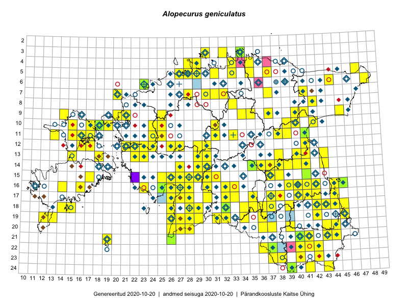

Alopecurus geniculatus — põlvjas rebasesaba
Poaceae :: Alopecurus geniculatus L. (746)

Kaart põhineb 839 kirjel:
vaatlusi 478
herbaareksemplare 268
PKÜ kirjeid1 74
ELFi kirjeid2 16
LVA kirjeid3 3
Taime kaasaegsed ja ajaloolised leiukohad asuvad 346 ruudus.
Tingmärgid ja leidudega ruutude arvud periooditi uues (u) ja 2005 andmestikus (v)
| █ | vahemik | u4 | v5 |
|---|---|---|---|
| █ | 2006–2020 | 195 | – |
| ◆/◇ | 1971–2005 | 225 | 217 |
| ○ | 1921–1970 | 111 | 57 |
| + | kuni 1920 | 14 | 0 |
| × | hävinud | – | 0 |
| ? | kaheldav | – | 0 |
| Ruut | Leidja(d) | Leiuaeg | Kirje |
|---|---|---|---|
| 16-14 | Mari Reitalu, Sirje Azarov | 2020-09-03 | ruut/ala: Alopecurus geniculatus L. |
| 15-17 | Mari Reitalu, Sirje Azarov | 2020-08-27–2020-09-06 | ruut/ala: Alopecurus geniculatus L. |
| 09-37 | Mari Reitalu | 2020-07-24 | ruut/ala: Alopecurus geniculatus L. |
| 16-39 | Toomas Kukk, Peedu Saar, Art Villem Adojaan | 2020-07-15 | ruut/ala: Alopecurus geniculatus L. |
| 17-11 | Rein Kalamees, Ott Luuk | 2020-07-03 | PKÜ: 20457 |
| 05-29 | Peedu Saar, Mart Meriste | 2020-06-19 | ruut/ala: Alopecurus geniculatus L. |
| 09-21 | Ott Luuk, Peedu Saar | 2020-06-16 | PKÜ: 20442 |
| 05-31 | Rein Kalamees | 2020-06-13 | ruut/ala: Alopecurus geniculatus L. |
| 03-34 | Peedu Saar, Ene Kook | 2020-06-10 | TAA0153468: Alopecurus geniculatus L. |
| 03-34 | Ene Kook | 2020-06-10 | PKÜ: 20347 |
| 10-39 | Toomas Kukk, Thea Kull | 2019-09-10 | ruut/ala: Alopecurus geniculatus L. |
| 10-40 | Toomas Kukk, Thea Kull | 2019-09-10 | ruut/ala: Alopecurus geniculatus L. |
| 14-30 | Ott Luuk, Eerik Leibak | 2019-08-28 | ruut/ala: Alopecurus geniculatus L. |
| 04-33 | Ott Luuk, Jaak-Albert Metsoja | 2019-08-07 | ruut/ala: Alopecurus geniculatus L. |
| 05-31 | Peedu Saar, Timo Luhamäe | 2019-08-06 | ruut/ala: Alopecurus geniculatus L. |
| 20-44 | Ott Luuk, Tiit Hallikma | 2019-07-09 | ruut/ala: Alopecurus geniculatus L. |
| 17-40 | Margus Ots, Ekke Rikka, Sigrid Ots, Meelis Pärtel, Kadri Pärtel, Jaak Pärtel, Leene Pärtel, Karin Pai, Marko Mägi | 2019-06-14–2019-06-15 | punkt: Alopecurus geniculatus L. |
| 16-40 | Margit Hirv, Veljo Runnel | 2019-06-14 | punkt: Alopecurus geniculatus L. |
| 16-45 | Ott Luuk | 2019-06-07 | TAA0150040: Alopecurus geniculatus L. |
| 12-16 | Toomas Kukk, Indrek Tammekänd | 2019-06-03 | ruut/ala: Alopecurus geniculatus L. |
| 12-17 | Toomas Kukk, Indrek Tammekänd | 2019-06-01 | ruut/ala: Alopecurus geniculatus L. |
| 16-28 | Indrek Tammekänd | 2019-05-29–2019-08-23 | ruut/ala: Alopecurus geniculatus L. |
| 16-16 | Toomas Kukk, Tiit Hallikma | 2018-08-30 | ruut/ala: Alopecurus geniculatus L. |
| 11-31 | Ott Luuk | 2018-08-23 | ruut/ala: Alopecurus geniculatus L. |
| 23-42 | Toomas Kukk, Eerik Leibak | 2018-07-18 | ruut/ala: Alopecurus geniculatus L. |
| 12-24 | Meeli Mesipuu | 2018-07-12 | ruut/ala: Alopecurus geniculatus L. |
| 10-18 | Toomas Kukk, Meeli Mesipuu | 2018-07-11 | ruut/ala: Alopecurus geniculatus L. |
| 10-18 | Peedu Saar | 2018-07-10 | TAA0146905: Alopecurus geniculatus L. |
| 06-23 | Ott Luuk, Meeli Mesipuu, Jaak-Albert Metsoja, Mari Metsoja, Peedu Saar | 2018-07-04–2018-07-06 | ruut/ala: Alopecurus geniculatus L. |
| 12-27 | Ranno Puumets | 2018-06-24 | ruut/ala: Alopecurus geniculatus L. |
| 14-43 | Toomas Kukk, Ilmar Uibopuu | 2018-06-17 | ruut/ala: Alopecurus geniculatus L. |
| 17-40 | Margus Ots, Sigrid Ots, Ekke Rikka | 2018-06-16 | punkt: Alopecurus geniculatus L. |
| 20-39 | Ilmar Uibopuu | 2018-06-15 | LVA: -1357097252 |
| 19-34 | Mari Reitalu, Elle Roosaluste | 2018-06-02 | ruut/ala: Alopecurus geniculatus L. |
| 13-18 | Toomas Kukk, Ilmar Uibopuu | 2018-05-26 | ruut/ala: Alopecurus geniculatus L. |
| 07-37 | Toomas Kukk, Peedu Saar | 2017-09-28 | ruut/ala: Alopecurus geniculatus L. |
| 09-35 | Peedu Saar, Toomas Kukk | 2017-09-27 | ruut/ala: Alopecurus geniculatus L. |
| 11-17 | Toomas Kukk, Indrek Tammekänd | 2017-09-11 | ruut/ala: Alopecurus geniculatus L. |
| 14-27 | Ott Luuk, Indrek Tammekänd | 2017-08-11 | ruut/ala: Alopecurus geniculatus L. |
| 15-29 | Ilmar Uibopuu, Toomas Kukk | 2017-08-11 | ruut/ala: Alopecurus geniculatus L. |
| 11-25 | Toomas Kukk, Eerik Leibak | 2017-08-10 | ruut/ala: Alopecurus geniculatus L. |
| 11-24 | Eerik Leibak, Toomas Kukk | 2017-08-10 | ruut/ala: Alopecurus geniculatus L. |
| 12-27 | Mari Reitalu, Eerik Leibak | 2017-08-09 | ruut/ala: Alopecurus geniculatus L. |
| 24-43 | Meeli Mesipuu | 2017-07-31 | ruut/ala: Alopecurus geniculatus L. |
| 06-23 | Toomas Kukk, Ilmar Uibopuu, Kadri Kuusksalu | 2017-07-26 | ruut/ala: Alopecurus geniculatus L. |
| 14-39 | Peedu Saar | 2017-07-26 | ruut/ala: Alopecurus geniculatus L. |
| 20-39 | Ilmar Uibopuu | 2017-07-21–2017-07-24 | ruut/ala: Alopecurus geniculatus L. |
| 06-48 | Toomas Kukk | 2017-07-21 | ruut/ala: Alopecurus geniculatus L. |
| 16-23 | Indrek Tammekänd, Eike Tammekänd | 2017-07-20 | ruut/ala: Alopecurus geniculatus L. |
| 18-29 | Indrek Tammekänd | 2017-07-05 | ruut/ala: Alopecurus geniculatus L. |
| 16-41 | Peedu Saar, Ott Luuk | 2017-07-03–2017-07-04 | ruut/ala: Alopecurus geniculatus L. |
| 10-15 | Ott Luuk, Toomas Kukk, Peedu Saar, Sander Laherand | 2017-06-30–2017-07-01 | ruut/ala: Alopecurus geniculatus L. |
| 11-15 | Ott Luuk, Toomas Kukk, Peedu Saar, Sander Laherand | 2017-06-30 | ruut/ala: Alopecurus geniculatus L. |
| 15-41 | Peedu Saar | 2017-06-22 | TAA0141335: Alopecurus geniculatus L. |
| 14-35 | Ott Luuk, Peedu Saar | 2017-06-20 | TAA0142922: Alopecurus geniculatus L. |
| 14-35 | Ott Luuk, Peedu Saar | 2017-06-20 | TAA0142923: Alopecurus geniculatus L. |
| 14-37 | Thea Kull, Meeli Mesipuu | 2017-06-19 | ruut/ala: Alopecurus geniculatus L. |
| 07-20 | Peedu Saar, Elle Roosaluste, Kaili Orav | 2017-05-29–2017-05-30 | ruut/ala: Alopecurus geniculatus L. |
| 19-31 | Ott Luuk, Peedu Saar | 2016-10-06 | ruut/ala: Alopecurus geniculatus L. |
| 13-15 | Maret Gerz, Peedu Saar | 2016-08-11 | ruut/ala: Alopecurus geniculatus L. |
| 11-13 | Thea Kull, Peedu Saar | 2016-08-10 | ruut/ala: Alopecurus geniculatus L. |
| 11-15 | Thea Kull, Peedu Saar | 2016-08-09 | ruut/ala: Alopecurus geniculatus L. |
| 09-14 | Meeli Mesipuu, Maret Gerz | 2016-08-09 | ruut/ala: Alopecurus geniculatus L. |
| 21-43 | Thea Kull, Peedu Saar | 2016-08-05 | ruut/ala: Alopecurus geniculatus L. |
| 17-41 | Kersti Püssa, Rein Kalamees | 2016-07-29 | ruut/ala: Alopecurus geniculatus L. |
| 05-35 | Peedu Saar, Liina Oja, Susanna Vain | 2016-07-27 | ruut/ala: Alopecurus geniculatus L. |
| 05-33 | Ott Luuk, Hannes Pehlak | 2016-07-27 | ruut/ala: Alopecurus geniculatus L. |
| 16-41 | Kersti Püssa, Rein Kalamees | 2016-07-27 | ruut/ala: Alopecurus geniculatus L. |
| 17-26 | Indrek Tammekänd | 2016-07-25 | ruut/ala: Alopecurus geniculatus L. |
| 10-31 | Toivo Sepp, Peedu Saar | 2016-07-22 | ruut/ala: Alopecurus geniculatus L. |
| 13-29 | Sirje Azarov, Oliver Parrest | 2016-07-22 | ruut/ala: Alopecurus geniculatus L. |
| 16-42 | Kaire Lanno, Karin Kaljund | 2016-07-22 | ruut/ala: Alopecurus geniculatus L. |
| 07-31 | Erkki Otsman, Sergei Smirnov | 2016-07-22 | ruut/ala: Alopecurus geniculatus L. |
| 12-30 | Aat Sarv, Indrek Tammekänd | 2016-07-22 | ruut/ala: Alopecurus geniculatus L. |
| 13-30 | Tõnu Ploompuu, Hannes Pehlak, Marko Veinbergs | 2016-07-21 | ruut/ala: Alopecurus geniculatus L. |
| 15-31 | Meeli Mesipuu, Sirje Azarov | 2016-07-21 | ruut/ala: Alopecurus geniculatus L. |
| 14-30 | Hannes Pehlak, Tõnu Ploompuu, Marko Veinbergs | 2016-07-21 | ruut/ala: Alopecurus geniculatus L. |
| 17-28 | Ott Luuk, Liina Oja | 2016-07-20 | ruut/ala: Alopecurus geniculatus L. |
| 16-28 | Ott Luuk, Liina Oja | 2016-07-20 | ruut/ala: Alopecurus geniculatus L. |
| 18-36 | Mari Metsoja, Peedu Saar | 2016-07-20 | ruut/ala: Alopecurus geniculatus L. |
| 15-38 | Kaire Lanno, Karin Kaljund | 2016-07-20 | ruut/ala: Alopecurus geniculatus L. |
| 16-32 | Elle Rajandu, Indrek Tammekänd | 2016-07-20 | ruut/ala: Alopecurus geniculatus L. |
| 18-32 | Toomas Kukk, Hannes Pehlak | 2016-07-19 | ruut/ala: Alopecurus geniculatus L. |
| 19-28 | Toivo Sepp, Liina Oja | 2016-07-19 | ruut/ala: Alopecurus geniculatus L. |
| 18-34 | Thea Kull, Indrek Tammekänd | 2016-07-19 | ruut/ala: Alopecurus geniculatus L. |
| 20-28 | Aat Sarv, Eerik Leibak | 2016-07-19 | ruut/ala: Alopecurus geniculatus L. |
| 20-27 | Aat Sarv, Eerik Leibak | 2016-07-19 | ruut/ala: Alopecurus geniculatus L. |
| 19-26 | Ott Luuk, Hannes Pehlak | 2016-07-18 | ruut/ala: Alopecurus geniculatus L. |
| 18-26 | Meeli Mesipuu, Timo Luhamäe | 2016-07-18 | ruut/ala: Alopecurus geniculatus L. |
| 19-32 | Jaak-Albert Metsoja, Mari Metsoja, Lena Neuenkamp | 2016-07-18 | ruut/ala: Alopecurus geniculatus L. |
| 04-35 | Tõnu Ploompuu | 2016-07-16 | ruut/ala: Alopecurus geniculatus L. |
| 07-28 | Erkki Otsman, Sergei Smirnov | 2016-07-15 | ruut/ala: Alopecurus geniculatus L. |
| 10-17 | Eeva-Maria Jeletsky, Tarmo Niitla | 2016-07-14 | ruut/ala: Alopecurus geniculatus L. |
| 10-18 | Eeva-Maria Jeletsky, Tarmo Niitla | 2016-07-14 | ruut/ala: Alopecurus geniculatus L. |
| 17-27 | Indrek Tammekänd | 2016-07-12 | ruut/ala: Alopecurus geniculatus L. |
| 10-19 | Rein Kalamees, Liina Oja | 2016-07-07 | ruut/ala: Alopecurus geniculatus L. |
| 09-25 | Thea Kull, Oliver Parrest | 2016-07-06 | ruut/ala: Alopecurus geniculatus L. |
| 12-23 | Mari Reitalu, Oliver Parrest | 2016-07-05 | ruut/ala: Alopecurus geniculatus L. |
| 12-26 | Jaak-Albert Metsoja, Mari Metsoja | 2016-07-05 | ruut/ala: Alopecurus geniculatus L. |
| 18-28 | Indrek Tammekänd | 2016-07-05 | ruut/ala: Alopecurus geniculatus L. |
| 07-30 | Rein Kalamees, Liina Oja | 2016-07-04 | ruut/ala: Alopecurus geniculatus L. |
| 16-26 | Aat Sarv, Maret Gerz | 2016-07-04 | ruut/ala: Alopecurus geniculatus L. |
| 19-28 | Indrek Tammekänd | 2016-07-02 | ruut/ala: Alopecurus geniculatus L. |
| 19-28 | Indrek Tammekänd | 2016-07-02 | ruut/ala: Alopecurus geniculatus L. |
| 14-40 | Elle Rajandu, Karin Kikas | 2016-07-01 | punkt: Alopecurus geniculatus L. |
| 19-26 | Indrek Tammekänd | 2016-06-29 | ruut/ala: Alopecurus geniculatus L. |
| 07-32 | Rein Kalamees, Kersti Püssa | 2016-06-23 | ruut/ala: Alopecurus geniculatus L. |
| 14-30 | Indrek Tammekänd, Marja-Liisa Meriste | 2016-06-21 | ruut/ala: Alopecurus geniculatus L. |
| 14-38 | Kai Rünk, Ülle Jõgar, Illi Tarmu | 2016-06-20 | ruut/ala: Alopecurus geniculatus L. |
| 14-36 | Kai Rünk, Ülle Jõgar, Illi Tarmu | 2016-06-20 | ruut/ala: Alopecurus geniculatus L. |
| 24-39 | Indrek Tammekänd | 2016-06-18 | ruut/ala: Alopecurus geniculatus L. |
| 19-45 | Toomas Kukk, Tiit Hallikma | 2016-06-17 | ruut/ala: Alopecurus geniculatus L. |
| 18-45 | Toomas Kukk, Tiit Hallikma | 2016-06-17 | ruut/ala: Alopecurus geniculatus L. |
| 20-39 | Rein Kalamees, Eerik Leibak | 2016-06-17 | ruut/ala: Alopecurus geniculatus L. |
| 21-40 | Peedu Saar, Tarmo Niitla | 2016-06-17 | TAA0134746: Alopecurus geniculatus L. |
| 21-43 | Meeli Mesipuu, Timo Luhamäe | 2016-06-17 | ruut/ala: Alopecurus geniculatus L. |
| 20-43 | Meeli Mesipuu, Timo Luhamäe | 2016-06-17 | ruut/ala: Alopecurus geniculatus L. |
| 18-43 | Maret Gerz, Liina Oja | 2016-06-17 | ruut/ala: Alopecurus geniculatus L. |
| 22-40 | Toomas Kukk, Tiit Hallikma | 2016-06-16 | ruut/ala: Alopecurus geniculatus L. |
| 22-41 | Toomas Kukk, Tiit Hallikma | 2016-06-16 | ruut/ala: Alopecurus geniculatus L. |
| 21-41 | Ott Luuk, Sander Laherand | 2016-06-16 | ruut/ala: Alopecurus geniculatus L. |
| 22-37 | Jaak-Albert Metsoja, Mari Metsoja | 2016-06-16 | ruut/ala: Alopecurus geniculatus L. |
| 22-37 | Jaak-Albert Metsoja | 2016-06-16 | TAA0133805: Alopecurus geniculatus L. |
| 22-42 | Toomas Kukk, Tiit Hallikma, Johannes Kõdar | 2016-06-15 | ruut/ala: Alopecurus geniculatus L. |
| 23-37 | Maret Gerz, Liina Oja | 2016-06-15 | ruut/ala: Alopecurus geniculatus L. |
| 09-40 | Kersti Püssa, Rein Kalamees | 2016-06-15 | ruut/ala: Alopecurus geniculatus L. |
| 09-41 | Kersti Püssa, Rein Kalamees | 2016-06-15 | ruut/ala: Alopecurus geniculatus L. |
| 22-36 | Kai Rünk, Ülle Jõgar, Illi Tarmu | 2016-06-15 | ruut/ala: Alopecurus geniculatus L. |
| 21-44 | Toomas Kukk, Tiit Hallikma, Johannes Kõdar | 2016-06-14 | ruut/ala: Alopecurus geniculatus L. |
| 20-36 | Tarmo Niitla, Peedu Saar | 2016-06-14 | ruut/ala: Alopecurus geniculatus L. |
| 19-36 | Peedu Saar, Tarmo Niitla | 2016-06-14 | ruut/ala: Alopecurus geniculatus L. |
| 16-40 | Kai Rünk, Ülle Jõgar, Illi Tarmu | 2016-06-14 | ruut/ala: Alopecurus geniculatus L. |
| 16-44 | Maret Gerz, Liina Oja | 2016-06-13 | ruut/ala: Alopecurus geniculatus L. |
| 17-44 | Maret Gerz, Liina Oja | 2016-06-13 | ruut/ala: Alopecurus geniculatus L. |
| 18-26 | Ott Luuk, Peedu Saar | 2016-06-10 | ruut/ala: Alopecurus geniculatus L. |
| 13-43 | Kai Rünk, Ülle Jõgar, Illi Tarmu | 2016-06-10 | ruut/ala: Alopecurus geniculatus L. |
| 11-39 | Eeva-Maria Jeletsky, Tarmo Niitla | 2016-06-10 | ruut/ala: Alopecurus geniculatus L. |
| 20-28 | Peedu Saar, Ott Luuk | 2016-06-09 | ruut/ala: Alopecurus geniculatus L. |
| 19-28 | Ott Luuk, Peedu Saar | 2016-06-09 | ruut/ala: Alopecurus geniculatus L. |
| 11-38 | Eeva-Maria Jeletsky, Tarmo Niitla | 2016-06-09 | ruut/ala: Alopecurus geniculatus L. |
| 21-26 | Thea Kull, Peedu Saar | 2016-06-07 | ruut/ala: Alopecurus geniculatus L. |
| 19-26 | Peedu Saar, Thea Kull | 2016-06-07 | ruut/ala: Alopecurus geniculatus L. |
| 08-42 | Kersti Püssa, Rein Kalamees | 2016-06-07 | ruut/ala: Alopecurus geniculatus L. |
| 20-27 | Thea Kull, Peedu Saar | 2016-06-06 | ruut/ala: Alopecurus geniculatus L. |
| 20-26 | Peedu Saar, Thea Kull | 2016-06-06 | ruut/ala: Alopecurus geniculatus L. |
| 11-41 | Eeva-Maria Jeletsky, Tarmo Niitla | 2016-06-05 | ruut/ala: Alopecurus geniculatus L. |
| 12-41 | Eeva-Maria Jeletsky, Tarmo Niitla | 2016-06-04 | ruut/ala: Alopecurus geniculatus L. |
| 19-29 | Toomas Kukk, Tiit Hallikma | 2016-06-03 | ruut/ala: Alopecurus geniculatus L. |
| 24-39 | Anneli Palo | 2016-05-30 | LVA: 1585993950 |
| 03-32 | Rein Kalamees, Kersti Püssa | 2015-09-06 | ruut/ala: Alopecurus geniculatus L. |
| 12-22 | Toomas Kukk, Tiit Hallikma | 2015-08-27 | PKÜ: 18605 |
| 16-44 | Karin Kaljund, Kaili Kattai | 2015-08-27 | punkt: Alopecurus geniculatus L. |
| 09-21 | Peedu Saar, Ott Luuk | 2015-08-26 | PKÜ: 19826 |
| 09-21 | Ott Luuk, Peedu Saar | 2015-08-26 | ruut/ala: Alopecurus geniculatus L. |
| 12-21 | Meeli Mesipuu, Maret Gerz | 2015-08-26 | PKÜ: 18678 |
| 11-21 | Tiit Hallikma, Toomas Kukk | 2015-08-25 | PKÜ: 18660 |
| 12-22 | Peedu Saar, Ott Luuk | 2015-08-24 | PKÜ: 18232 |
| 12-22 | Ott Luuk, Peedu Saar | 2015-08-24 | ruut/ala: Alopecurus geniculatus L. |
| 13-23 | Kirsi Loide, Marje Loide | 2015-08-18–2015-08-20 | ruut/ala: Alopecurus geniculatus L. |
| 05-37 | Rein Kalamees, Kersti Püssa | 2015-08-15 | ruut/ala: Alopecurus geniculatus L. |
| 04-29 | Kadi-Liis Kesler, Tiina Elvisto | 2015-08-12 | ruut/ala: Alopecurus geniculatus L. |
| 13-41 | Peedu Saar | 2015-08-11 | ruut/ala: Alopecurus geniculatus L. |
| 20-37 | Eeva-Maria Jeletsky, Tarmo Niitla | 2015-08-11 | ruut/ala: Alopecurus geniculatus L. |
| 13-22 | Kirsi Loide, Marje Loide | 2015-08-10–2015-08-13 | ruut/ala: Alopecurus geniculatus L. |
| 13-15 | Toomas Kukk, Eerik Leibak | 2015-08-10 | ruut/ala: Alopecurus geniculatus L. |
| 13-40 | Peedu Saar | 2015-08-10 | ruut/ala: Alopecurus geniculatus L. |
| 20-37 | Eeva-Maria Jeletsky, Tarmo Niitla | 2015-08-10 | ruut/ala: Alopecurus geniculatus L. |
| 15-25 | Maret Gerz, Leena Gerz | 2015-08-08 | ruut/ala: Alopecurus geniculatus L. |
| 22-40 | Eeva-Maria Jeletsky, Tarmo Niitla | 2015-08-05 | ruut/ala: Alopecurus geniculatus L. |
| 23-40 | Eeva-Maria Jeletsky, Tarmo Niitla | 2015-08-05 | ruut/ala: Alopecurus geniculatus L. |
| 23-40 | Eeva-Maria Jeletsky, Tarmo Niitla | 2015-08-04 | ruut/ala: Alopecurus geniculatus L. |
| 24-41 | Eeva-Maria Jeletsky, Tarmo Niitla | 2015-08-04 | ruut/ala: Alopecurus geniculatus L. |
| 09-35 | Jana-Maria Habicht, Ester Valdvee, Kirke Pilvik, Anu Nurk | 2015-07-30 | ruut/ala: Alopecurus geniculatus L. |
| 19-42 | Kirsi Loide, Marje Loide | 2015-07-29–2015-07-30 | ruut/ala: Alopecurus geniculatus L. |
| 10-42 | Kai Rünk, Ülle Jõgar, Illi Tarmu | 2015-07-29 | ruut/ala: Alopecurus geniculatus L. |
| 18-42 | Kirsi Loide, Marje Loide | 2015-07-28 | ruut/ala: Alopecurus geniculatus L. |
| 15-26 | Kadi-Liis Kesler, Tiina Elvisto | 2015-07-28 | ruut/ala: Alopecurus geniculatus L. |
| 15-27 | Kadi-Liis Kesler, Tiina Elvisto | 2015-07-28 | ruut/ala: Alopecurus geniculatus L. |
| 11-25 | Hanna-Eliisa Luts, Tõnu Ploompuu | 2015-07-28 | ruut/ala: Alopecurus geniculatus L. |
| 17-42 | Kirsi Loide, Marje Loide | 2015-07-27–2015-07-28 | ruut/ala: Alopecurus geniculatus L. |
| 09-34 | Jana-Maria Habicht, Ester Valdvee, Kirke Pilvik | 2015-07-25–2015-07-26 | ruut/ala: Alopecurus geniculatus L. |
| 09-45 | Peedu Saar, Liina Oja | 2015-07-24 | ruut/ala: Alopecurus geniculatus L. |
| 07-41 | Tiit Hallikma, Toomas Kukk | 2015-07-23 | ruut/ala: Alopecurus geniculatus L. |
| 05-47 | Tiit Hallikma, Toomas Kukk | 2015-07-22 | ruut/ala: Alopecurus geniculatus L. |
| 06-44 | Peedu Saar, Liina Oja | 2015-07-21 | ruut/ala: Alopecurus geniculatus L. |
| 10-24 | Hanna-Eliisa Luts, Tõnu Ploompuu, Anna-Grete Rebane | 2015-07-19 | ruut/ala: Alopecurus geniculatus L. |
| 23-38 | Eeva-Maria Jeletsky, Tarmo Niitla | 2015-07-17 | ruut/ala: Alopecurus geniculatus L. |
| 15-38 | Peedu Saar | 2015-07-14 | ruut/ala: Alopecurus geniculatus L. |
| 19-27 | Meeli Mesipuu, Indrek Tammekänd | 2015-07-14 | ruut/ala: Alopecurus geniculatus L. |
| 05-29 | Erkki Otsman, Sergei Smirnov | 2015-07-12–2015-07-13 | ruut/ala: Alopecurus geniculatus L. |
| 10-31 | Ott Luuk, Toivo Sepp | 2015-07-12 | ruut/ala: Alopecurus geniculatus L. |
| 18-39 | Malle Leht | 2015-07-09–2015-07-19 | ruut/ala: Alopecurus geniculatus L. |
| 17-32 | Maria Abakumova, Tiit Hallikma | 2015-07-09 | ruut/ala: Alopecurus geniculatus L. |
| 05-27 | Erkki Otsman, Sergei Smirnov | 2015-07-08 | ruut/ala: Alopecurus geniculatus L. |
| 15-37 | Helle Mäemets, Mare Leis, Jaak-Albert Metsoja | 2015-07-05 | ruut/ala: Alopecurus geniculatus L. |
| 18-44 | Peedu Saar | 2015-07-04 | ruut/ala: Alopecurus geniculatus L. |
| 13-38 | Ülle Jõgar, Illi Tarmu, Kai Rünk | 2015-07-03 | ruut/ala: Alopecurus geniculatus L. |
| 08-33 | Erkki Otsman, Sergei Smirnov | 2015-07-02–2015-07-03 | ruut/ala: Alopecurus geniculatus L. |
| 21-19 | Silvia Pihu | 2015-07-01 | ruut/ala: Alopecurus geniculatus L. |
| 19-13 | Oliver Parrest | 2015-07-01 | ruut/ala: Alopecurus geniculatus L. |
| 10-25 | Aat Sarv | 2015-06-29 | ruut/ala: Alopecurus geniculatus L. |
| 11-15 | Eeva-Maria Jeletsky, Tarmo Niitla | 2015-06-27 | ruut/ala: Alopecurus geniculatus L. |
| 05-28 | Erkki Otsman, Sergei Smirnov | 2015-06-26–2015-06-30 | ruut/ala: Alopecurus geniculatus L. |
| 09-20 | Kadi-Liis Kesler | 2015-06-25–2015-10-11 | ruut/ala: Alopecurus geniculatus L. |
| 18-35 | Helle Mäemets, Mare Leis | 2015-06-24 | ruut/ala: Alopecurus geniculatus L. |
| 17-35 | Helle Mäemets, Mare Leis | 2015-06-23 | ruut/ala: Alopecurus geniculatus L. |
| 17-33 | Maria Abakumova | 2015-06-22 | ruut/ala: Alopecurus geniculatus L. |
| 18-37 | Helle Mäemets, Mare Leis | 2015-06-22 | ruut/ala: Alopecurus geniculatus L. |
| 11-16 | Eeva-Maria Jeletsky, Tarmo Niitla | 2015-06-22 | ruut/ala: Alopecurus geniculatus L. |
| 15-41 | Thea Kull | 2015-06-21–2015-07-28 | ruut/ala: Alopecurus geniculatus L. |
| 14-41 | Peedu Saar, Ott Luuk | 2015-06-21 | ruut/ala: Alopecurus geniculatus L. |
| 12-16 | Eeva-Maria Jeletsky, Tarmo Niitla | 2015-06-21 | ruut/ala: Alopecurus geniculatus L. |
| 11-16 | Eeva-Maria Jeletsky, Tarmo Niitla | 2015-06-20 | ruut/ala: Alopecurus geniculatus L. |
| 11-17 | Eeva-Maria Jeletsky, Tarmo Niitla | 2015-06-20 | ruut/ala: Alopecurus geniculatus L. |
| 17-38 | Thea Kull, Peedu Saar | 2015-06-17 | ruut/ala: Alopecurus geniculatus L. |
| 16-27 | Meeli Mesipuu | 2015-06-17 | ruut/ala: Alopecurus geniculatus L. |
| 15-28 | Mari Metsoja, Jaak-Albert Metsoja | 2015-06-12 | ruut/ala: Alopecurus geniculatus L. |
| 15-29 | Peedu Saar, Liina Oja | 2015-06-11 | ruut/ala: Alopecurus geniculatus L. |
| 17-30 | Ott Luuk, Hannes Pehlak | 2015-06-11 | ruut/ala: Alopecurus geniculatus L. |
| 17-27 | Indrek Tammekänd, Eike Tammekänd, Raivo Endrekson | 2015-06-10–2015-09-01 | ruut/ala: Alopecurus geniculatus L. |
| 15-30 | Tiit Hallikma, Toomas Kukk | 2015-06-10 | ruut/ala: Alopecurus geniculatus L. |
| 14-30 | Peedu Saar, Liina Oja | 2015-06-10 | ruut/ala: Alopecurus geniculatus L. |
| 14-29 | Ott Luuk, Hannes Pehlak | 2015-06-10 | ruut/ala: Alopecurus geniculatus L. |
| 12-29 | Tiit Hallikma, Indrek Tammekänd, Toomas Kukk | 2015-06-09 | ruut/ala: Alopecurus geniculatus L. |
| 17-27 | Peedu Saar, Liina Oja | 2015-06-09 | ruut/ala: Alopecurus geniculatus L. |
| 17-28 | Peedu Saar, Liina Oja | 2015-06-09 | ruut/ala: Alopecurus geniculatus L. |
| 16-33 | Maria Abakumova | 2015-06-09 | ruut/ala: Alopecurus geniculatus L. |
| 16-30 | Mari Metsoja, Jaak-Albert Metsoja | 2015-06-09 | ruut/ala: Alopecurus geniculatus L. |
| 11-33 | Ott Luuk, Hannes Pehlak | 2015-06-08 | ruut/ala: Alopecurus geniculatus L. |
| 06-23 | Ott Luuk | 2015-06-05 | TAA0147285: Alopecurus geniculatus L. |
| 06-23 | Jaak-Albert Metsoja, Mari Metsoja, Ott Luuk | 2015-06-05 | ruut/ala: Alopecurus geniculatus L. |
| 21-19 | Oliver Parrest | 2015-05-29–2015-05-31 | ruut/ala: Alopecurus geniculatus L. |
| 11-17 | Peedu Saar, Toomas Kukk | 2015-05-28 | ruut/ala: Alopecurus geniculatus L. |
| 04-28 | Kadi-Liis Kesler, Tiina Elvisto | 2015-05-27 | ruut/ala: Alopecurus geniculatus L. |
| 19-28 | Indrek Tammekänd | 2015-05-25–2015-07-13 | ruut/ala: Alopecurus geniculatus L. |
| 18-32 | Maria Abakumova, Helle Mäemets | 2015-05-25 | ruut/ala: Alopecurus geniculatus L. |
| 18-32 | Helle Mäemets | 2015-05-25 | TAA0119914: Alopecurus geniculatus L. |
| 16-25 | Peedu Saar, Liina Oja | 2015-05-21 | ruut/ala: Alopecurus geniculatus L. |
| 16-25 | Peedu Saar, Liina Oja | 2015-05-21 | TAA0116366: Alopecurus geniculatus L. |
| 16-27 | Indrek Tammekänd | 2015-05-13–2015-09-15 | ruut/ala: Alopecurus geniculatus L. |
| 20-28 | Indrek Tammekänd | 2015-05-10–2015-07-04 | ruut/ala: Alopecurus geniculatus L. |
| 17-37 | Helle Mäemets | 2015-05-03–2015-07-14 | ruut/ala: Alopecurus geniculatus L. |
| 05-28 | Maris Rattur, Olev Abner | 2014-09-19 | punkt: Alopecurus geniculatus L. |
| 18-14 | Mari Reitalu, Triin Reitalu | 2014-07-17–2014-07-18 | ruut/ala: Alopecurus geniculatus L. |
| 20-39 | Ilmar Uibopuu | 2014-06-21 | LVA: -865670052 |
| 18-15 | Toomas Kukk | 2014-06-18 | ruut/ala: Alopecurus geniculatus L. |
| 24-39 | Meeli Mesipuu, Thea Kull, Eerik Leibak | 2014-06-09 | ruut/ala: Alopecurus geniculatus L. |
| 24-39 | Meeli Mesipuu | 2014-06-09 | TAA0114581: Alopecurus geniculatus L. |
| 24-39 | Meeli Mesipuu | 2014-06-09 | TAA0114582: Alopecurus geniculatus L. |
| 03-30 | Mari Reitalu, Tõnu Ploompuu, Ott Luuk, Peedu Saar | 2014-06-01 | ruut/ala: Alopecurus geniculatus L. |
| 19-12 | Ott Luuk, Mari Reitalu, Thea Kull | 2014-05-23 | ruut/ala: Alopecurus geniculatus L. |
| 04-34 | Peedu Saar, Ott Luuk | 2011-09-06 | PKÜ: 17225 |
| 15-22 | Marika Kose | 2010-11-20 | ELF: 21690 |
| 17-25 | Marika Kose | 2010-10-27 | ELF: 21612 |
| 19-39 | Rein Kuresoo | 2010-08-22 | ELF: 22858 |
| 19-45 | Kairi Sepp, Sille Tammik | 2010-07-27 | ELF: 19229 |
| 06-29 | Kuldar Pärn, Liis Multer | 2010-07-20 | ELF: 15300 |
| 19-37 | Rein Kuresoo | 2009-09-29 | ELF: 13162 |
| 22-38 | Karin Kikas, Martti Rohusaar | 2009-09-24 | ELF: 11862 |
| 05-35 | Vallo Valdmann | 2009-09-22 | ELF: 11973 |
| 05-35 | Vallo Valdmann | 2009-09-22 | ELF: 11976 |
| 12-24 | Kaili Kattai, Karin Kaljund | 2009-07-02 | PKÜ: 15213 |
| 12-24 | Meeli Mesipuu, Thea Kull | 2009-07-01 | PKÜ: 15233 |
| 12-24 | Kaili Kattai, Karin Kaljund | 2009-06-30 | PKÜ: 15209 |
| 12-24 | Kaili Kattai, Karin Kaljund | 2009-06-30 | PKÜ: 15210 |
| 12-24 | Kaili Kattai, Karin Kaljund | 2009-06-29 | PKÜ: 15206 |
| 19-34 | Aglis Part, Mare Toom | 2009-06-28–2009-07-03 | punkt: Alopecurus geniculatus L. |
| 11-41 | Helle Mäemets | 2009-06-18 | TAA2003325: Alopecurus geniculatus L. |
| 21-26 | J.-M. Habicht | 2008-08-01 | TAM0014154: Alopecurus geniculatus L. |
| 04-33 | Meeli Mesipuu, Ott Luuk | 2008-07-31 | PKÜ: 14703 |
| 12-21 | 2008-07-01 | punkt: Alopecurus geniculatus L. | |
| 13-41 | Mare Toom | 2008 | ruut/ala: Alopecurus geniculatus L. |
| 22-39 | Meeli Mesipuu, Katrin Jürgens | 2006-09-16 | PKÜ: 12948 |
| 15-27 | Jaan Liira | 2006-08-17 | PKÜ: 3399 |
| 04-37 | Silvia Pihu, Raul Pihu | 2006-07-23 | PKÜ: 13040 |
| 06-36 | Toomas Kukk, Rein Kalamees | 2006-07-19 | PKÜ: 13241 |
| 15-22 | Meeli Mesipuu, Karin Kikas | 2006-06-22 | PKÜ: 13462 |
| 13-23 | Meeli Mesipuu, Helen Toom | 2006-06-08 | PKÜ: 12349 |
| 14-37 | Jaak-Albert Metsoja, Helen Toom | 2005-07-19 | PKÜ: 11902 |
| 11-22 | Oliver Parrest, Jaak-Albert Metsoja | 2005-06-17 | PKÜ: 12296 |
| 11-22 | Meeli Mesipuu, Katrin Jürgens | 2005-06-17 | PKÜ: 12249 |
| 11-22 | Meeli Mesipuu, Katrin Jürgens | 2005-06-17 | PKÜ: 12250 |
| 11-22 | Meeli Mesipuu, Kadri Tali | 2005-06-16 | PKÜ: 12246 |
| 12-23 | Aveliina Helm, Katrin Jürgens | 2005-06-16 | PKÜ: 12278 |
| 12-23 | Meeli Mesipuu, Kadri Tali | 2005-06-15 | PKÜ: 12228 |
| 12-23 | Aveliina Helm, Katrin Jürgens | 2005-06-15 | PKÜ: 12275 |
| 12-23 | Oliver Parrest, Jaak-Albert Metsoja | 2005-06-14 | PKÜ: 12286 |
| 12-22;12-23 | Oliver Parrest, Jaak-Albert Metsoja | 2005-06-14 | PKÜ: 12285 |
| 12-23 | Kaili Kattai, Helen Toom | 2005-06-14 | PKÜ: 12153 |
| 12-22;12-23 | Aveliina Helm, Katrin Jürgens | 2005-06-14 | PKÜ: 12268 |
| 12-23 | Meeli Mesipuu, Jaak-Albert Metsoja | 2005-06-13 | PKÜ: 12209 |
| 12-23 | Meeli Mesipuu, Jaak-Albert Metsoja | 2005-06-13 | PKÜ: 12211 |
| 12-23 | Aveliina Helm, Katrin Jürgens, Oliver Parrest | 2005-06-13 | PKÜ: 12266 |
| 11-24 | Tõnu Ploompuu | 2004-06-30–2004-07-06 | ruut/ala: Alopecurus geniculatus L. |
| 05-28 | Olev Abner | 2004-06-29 | TALL C010493: Alopecurus geniculatus L. |
| 19-28 | Vivika Meltsov, Katrin Jürgens | 2003-08-16 | PKÜ: 11343 |
| 19-28 | Vivika Meltsov, Katrin Jürgens | 2003-08-16 | PKÜ: 11342 |
| 08-46 | Thea Kull, Toomas Kukk | 2003-07-26 | ruut/ala: Alopecurus geniculatus L. |
| 08-46 | Thea Kull | 2003-07-26 | punkt: Alopecurus geniculatus L. |
| 06-39 | Tõnu Ploompuu | 2003-07-03–2003-07-09 | ruut/ala: Alopecurus geniculatus L. |
| 19-28 | Meeli Mesipuu, Bert Holm | 2003-06-26 | PKÜ: 11422 |
| 17-11 | Vivika Meltsov, Kaili Kattai | 2003-06-17 | PKÜ: 10975 |
| 12-41 | U. Ramst | 2003-06-11 | TAM0104371: Alopecurus geniculatus L. |
| 10-40 | Meeli Mesipuu, Thea Kull | 2002-07-24 | PKÜ: 8854 |
| 12-25 | Tõnu Ploompuu | 2002-06-28–2002-06-29 | ruut/ala: Alopecurus geniculatus L. |
| 14-15 | Elle Meier, Katrin Jürgens | 2002-06-12 | PKÜ: 8538 |
| 14-19 | Meeli Mesipuu, Katrin Jürgens | 2002-06-04 | PKÜ: 8549 |
| 10-31 | Urmas Laansoo, Eerik Leibak | 2001-09-03 | PKÜ: 7408 |
| 16-45 | Helle Mäemets | 2001-07-29 | TAA2003198: Alopecurus geniculatus L. |
| 15-16 | Toomas Kukk, Hannes Pehlak | 2001-07-18 | PKÜ: 7813 |
| 12-26 | Tõnu Ploompuu | 2001-07 | ruut/ala: Alopecurus geniculatus L. |
| 19-28 | Toomas Kukk, Bert Holm | 2001-06-20 | PKÜ: 6996 |
| 19-27 | Toomas Kukk, Bert Holm | 2001-06-20 | PKÜ: 6998 |
| 19-28;20-28 | Toomas Kukk, Bert Holm | 2001-06-19 | PKÜ: 6992 |
| 20-27 | Toomas Kukk, Bert Holm | 2001-06-19 | PKÜ: 6981 |
| 14-29 | Tõnu Ploompuu | 2001-06-10 | ruut/ala: Alopecurus geniculatus L. |
| 14-28 | Tõnu Ploompuu | 2001-06 | ruut/ala: Alopecurus geniculatus L. |
| 09-26 | Tõnu Ploompuu | 2001–2005 | punkt: Alopecurus geniculatus L. |
| 06-28 | Tõnu Ploompuu, Urmas Laansoo | 2001 | punkt: Alopecurus geniculatus L. |
| 17-16 | Tõnu Ploompuu | 2001 | punkt: Alopecurus geniculatus L. |
| 12-22;12-23 | Mari Reitalu, Marje Loide, Eerik Leibak | 2000-11-05 | PKÜ: 3101 |
| 07-42 | Toomas Kukk, Eerik Leibak | 2000-10-02 | PKÜ: 3765 |
| 16-17 | Anneli Tamm | 2000-09-12 | PKÜ: 6852 |
| 07-27 | Mari Tobias, Kersti Oras | 2000-09-11 | PKÜ: 6230 |
| 09-16 | Toomas Kukk, Bert Holm | 2000-09-07 | PKÜ: 3871 |
| 15-39 | Mare Leis, Katrin Heinsoo | 2000-08-27 | PKÜ: 4078 |
| 11-25 | Toomas Kukk, Bert Holm | 2000-08-23 | PKÜ: 2662 |
| 09-21 | Tõnu Ploompuu, Hannu Ploompuu, Mats Ploompuu | 2000-08-21 | PKÜ: 2566 |
| 09-21 | Elle Meier, Kaja Luks | 2000-08-21 | PKÜ: 2548 |
| 16-38 | Mare Leis, Marek Sammul | 2000-08-19 | PKÜ: 6958 |
| 23-40 | Ülle Reier, Bert Holm | 2000-08-16 | PKÜ: 6794 |
| 09-37 | Thea Kull, Virve Sõber | 2000-08-16 | PKÜ: 3686 |
| 18-41 | Nele Ingerpuu, Silvia Sepp | 2000-08-16 | PKÜ: 2108 |
| 07-27 | Uve Ramst | 2000-08-07 | TAM0101517: Alopecurus geniculatus L. |
| 16-40 | Mare Leis, Katrin Heinsoo | 2000-08-06 | PKÜ: 4064 |
| 08-45 | Tõnu Ploompuu | 2000-08-01 | ruut/ala: Alopecurus geniculatus L. |
| 12-36 | Malle Leht, Aivo Lepp | 2000-07-27 | PKÜ: 5983 |
| 12-22;13-22 | Toomas Kukk, Bert Holm | 2000-07-25 | PKÜ: 2321 |
| 12-23 | Tõnu Ploompuu | 2000-07-10–2000-07-15 | ruut/ala: Alopecurus geniculatus L. |
| 12-24 | Tõnu Ploompuu | 2000-07-10–2000-07-15 | punkt: Alopecurus geniculatus L. |
| 17-27 | Malle Leht, Aivo Lepp | 2000-07-06 | PKÜ: 4864 |
| 18-26 | Malle Leht, Aivo Lepp | 2000-07-05 | PKÜ: 4856 |
| 08-41 | Tõnu Ploompuu | 2000-06-27–2000-07-02 | ruut/ala: Alopecurus geniculatus L. |
| 12-22 | Toomas Kukk, Bert Holm | 2000-06-10 | PKÜ: 2268 |
| 11-22 | Toomas Kukk, Bert Holm | 2000-06-10 | PKÜ: 2220 |
| 12-23 | Toomas Kukk, Bert Holm | 2000-06-08 | PKÜ: 2258 |
| 12-23 | Toomas Kukk, Anneli Tamm, Bert Holm | 2000-06-08 | PKÜ: 2254 |
| 16-40 | Toomas Hirse | 2000-06-06 | TAA0114022: Alopecurus geniculatus L. |
| 06-27 | Tõnu Ploompuu | 2000–2003 | ruut/ala: Alopecurus geniculatus L. |
| 09-37 | M. Reitalu | 1999-09-15–1999-09-16 | ruut/ala: Alopecurus geniculatus L. |
| 10-19 | Elle Puurmann | 1999-08-27 | PKÜ: 975 |
| 19-26 | Urmas Laansoo | 1999-08-23 | ruut/ala: Alopecurus geniculatus L. |
| 17-12 | Mare Leis, Anneli Tamm, Priit Holtsmann | 1999-07-29 | PKÜ: 1506 |
| 15-16;16-16 | Toomas Kukk, Peter Veen, Andres Luhamaa, Eerik Leibak | 1999-07-19 | PKÜ: 1159 |
| 18-31 | Tiiu Kull, Malle Leht, Heljo Krall | 1999-07-06 | ruut/ala: Alopecurus geniculatus L. |
| 18-30 | Heljo Krall, Malle Leht, Tiiu Kull | 1999-07-06 | ruut/ala: Alopecurus geniculatus L. |
| 11-32 | J.-M. Habicht | 1999-07-01 | TAM0000398: Alopecurus geniculatus L. |
| 04-29 | Vilma Kuusk, Heljo Krall | 1999-06-26 | ruut/ala: Alopecurus geniculatus L. |
| 14-31 | Toomas Kukk, Malle Leht, Heljo Krall, Tõnu Ploompuu | 1999-06-11–1999-06-22 | ruut/ala: Alopecurus geniculatus L. |
| 12-21 | Tõnu Ploompuu | 1999-06-03–1999-06-07 | ruut/ala: Alopecurus geniculatus L. |
| 13-31 | Toomas Kukk, Tõnu Ploompuu, Ülle Reier | 1999-05-28–1999-05-30 | ruut/ala: Alopecurus geniculatus L. |
| 10-22 | Tõnu Ploompuu | 1999–2003 | ruut/ala: Alopecurus geniculatus L. |
| 08-22 | Tõnu Ploompuu | 1998-08-17 | ruut/ala: Alopecurus geniculatus L. |
| 07-20 | Toomas Kukk | 1998-07-28 | TAA0063403: Alopecurus geniculatus L. |
| 07-20 | Toomas Kukk | 1998-07-28 | TAA0063404: Alopecurus geniculatus L. |
| 07-20 | Toomas Kukk, Vilma Kuusk | 1998-07-27–1998-07-30 | ruut/ala: Alopecurus geniculatus L. |
| 20-42 | M. Leht | 1998-07-08 | ruut/ala: Alopecurus geniculatus L. |
| 16-26 | Toomas Kukk | 1998-07-03–1998-07-08 | ruut/ala: Alopecurus geniculatus L. |
| 06-24 | Toomas Kukk, Marek Sammul | 1998-06-03 | ruut/ala: Alopecurus geniculatus L. |
| 06-23 | Toomas Kukk | 1998-05-31 | TAA0063469: Alopecurus geniculatus L. |
| 06-34 | Tõnu Ploompuu | 1998 | ruut/ala: Alopecurus geniculatus L. |
| 08-40 | Tõnu Ploompuu | 1998 | ruut/ala: Alopecurus geniculatus L. |
| 12-27 | Tõnu Ploompuu | 1998 | ruut/ala: Alopecurus geniculatus L. |
| 18-40 | Malle Leht | 1998 | ruut/ala: Alopecurus geniculatus L. |
| 13-31 | Tiiu Trei | 1996-07-08 | TAA0118161: Alopecurus geniculatus L. |
| 15-37 | 1996–1997 | ruut/ala: Alopecurus geniculatus L. | |
| 05-29 | H. Aasamaa | 1995-07-22 | TAM0066061: Alopecurus geniculatus L. |
| 06-24 | O. Abner | 1995-07-03 | TALL C003677: Alopecurus geniculatus L. |
| 18-13 | M. Reitalu | 1995–1999 | ruut/ala: Alopecurus geniculatus L. |
| 18-23 | U. Laansoo | 1995 | ruut/ala: Alopecurus geniculatus L. |
| 22-42 | M. Leht | 1995 | ruut/ala: Alopecurus geniculatus L. |
| 10-19 | L. Liiv | 1994-07-12 | TU350737: Alopecurus geniculatus L. |
| 20-12 | Anneli Palo | 1994-06-15–1994-07-28 | ELF: 1492 |
| 19-12 | Anneli Palo | 1994-06-14–1994-07-28 | ELF: 1448 |
| 18-26 | Marika Kose | 1994-06-08 | ELF: 1582 |
| 17-26;17-27 | Marika Kose | 1994-06-08 | ELF: 1429 |
| 18-26;19-26 | Marika Kose | 1994-06–1994-08 | ELF: 1493 |
| 13-19 | Urmas Tokko | 1993-07-16 | ELF: 7518 |
| 10-19 | Toomas Kukk, Elle Roosaluste, Mare Leis, Thea Kull | 1993-06–1998-09-21 | ruut/ala: Alopecurus geniculatus L. |
| 07-20 | Malle Leht | 1993-06 | ruut/ala: Alopecurus geniculatus L. |
| 07-20 | Toomas Kukk | 1993 | ruut/ala: Alopecurus geniculatus L. |
| 15-42 | Inga Jüriado | 1992-07-08 | TU384668: Alopecurus geniculatus L. |
| 20-45 | Toomas Kukk, Tõnu Ploompuu | 1992-07-06–1998-05-17 | ruut/ala: Alopecurus geniculatus L. |
| 20-45 | Toomas Kukk | 1992-07-06–1993-07-22 | ruut/ala: Alopecurus geniculatus L. |
| 06-23 | Tõnu Ploompuu | 1992–1999 | ruut/ala: Alopecurus geniculatus L. |
| 05-45 | Tõnu Ploompuu | 1990-09-10 | TALL C003676: Alopecurus geniculatus L. |
| 05-27 | Uve Ramst | 1990-07-23 | TAM0000962: Alopecurus geniculatus L. |
| 16-30 | L. Piibar | 1990-07-11 | TAM0000943: Alopecurus geniculatus L. |
| 16-30 | T. Taela | 1990-07-10 | TAM0000944: Alopecurus geniculatus L. |
| 13-18 | Elle Roosaluste, Urmas Tokko | 1990-07–1991-07 | ELF: 1851 |
| 05-28 | Tõnu Ploompuu | 1990-06-28 | TALL C003675: Alopecurus geniculatus L. |
| 16-40 | Ülo Niinemets | 1990-06-20 | TAA0063341: Alopecurus geniculatus L. |
| 05-28 | Tõnu Ploompuu | 1990-06-11 | TALL C003674: Alopecurus geniculatus L. |
| 16-27 | Tõnu Ploompuu | 1990-06-05 | TALL C003673: Alopecurus geniculatus L. |
| 05-28 | Tõnu Ploompuu | 1990-05-22 | TALL C003672: Alopecurus geniculatus L. |
| 13-34 | Tiiu Trei | 1989-07-04 | TAA0118163: Alopecurus geniculatus L. |
| 13-34 | Tiiu Trei | 1989-07-04 | TAA0118162: Alopecurus geniculatus L. |
| 05-28 | Toomas Kukk | 1989–1992-07-23 | ruut/ala: Alopecurus geniculatus L. |
| 11-21 | H. Krall, L. Viljasoo, M. Leht, A. Saare, N. Ingerpuu | 1988-07-21 | ruut/ala: Alopecurus geniculatus L. |
| 12-24 | N. Ingerpuu | 1988-07-19 | ruut/ala: Alopecurus geniculatus L. |
| 11-23 | M. Leht, H. Krall | 1988-07-19 | ruut/ala: Alopecurus geniculatus L. |
| 10-18 | Lemmi Jõe | 1988-07-06 | TAM0000956: Alopecurus geniculatus L. |
| 10-18 | Lemmi Jõe | 1988-07-06 | TAM0000957: Alopecurus geniculatus L. |
| 17-35 | H. Krall, L. Viljasoo, M. Leht, L. Leht, K. Tõnnson, A. Raud | 1988-06-22 | ruut/ala: Alopecurus geniculatus L. |
| 19-33 | Heljo Krall, Nele Ingerpuu, K. Tõnnson, Linda Viljasoo, A. Saare | 1988-06-20 | ruut/ala: Alopecurus geniculatus L. |
| 19-32 | Heljo Krall, Nele Ingerpuu, K. Tõnnson, Linda Viljasoo, A. Saar | 1988-06-20 | ruut/ala: Alopecurus geniculatus L. |
| 20-34 | K. Tõnnson, H. Krall, N. Ingerpuu, L. Viljasoo, A. Saare | 1988-06-19 | ruut/ala: Alopecurus geniculatus L. |
| 08-42 | Tiiu Kull, Linda Viljasoo, Malle Leht, Heljo Krall | 1987-08-22 | ruut/ala: Alopecurus geniculatus L. |
| 09-38 | Heljo Krall, Linda Viljasoo, Tiiu Kull, Malle Leht | 1987-08-21 | ruut/ala: Alopecurus geniculatus L. |
| 09-40 | H. Krall, K. Kihno, K. Tõnnson | 1987-08-19 | ruut/ala: Alopecurus geniculatus L. |
| 09-42 | botaaniline ekspeditsioon ZBI | 1987-08-17–1987-08-25 | ruut/ala: Alopecurus geniculatus L. |
| 08-40 | K. Kihno, K. Tõnnson, H. Krall | 1987-07-20 | ruut/ala: Alopecurus geniculatus L. |
| 18-44 | Heljo Krall, Nele Ingerpuu, Maret Kask, Linda Viljasoo | 1987-07-17 | ruut/ala: Alopecurus geniculatus L. |
| 15-42 | Nele Ingerpuu, Heljo Krall | 1987-07-15 | ruut/ala: Alopecurus geniculatus L. |
| 18-43 | Heljo Krall, Nele Ingerpuu | 1987-07-13 | ruut/ala: Alopecurus geniculatus L. |
| 06-31 | U. Laansoo, H. Krall | 1987-06-25 | ruut/ala: Alopecurus geniculatus L. |
| 10-20 | Heinrich Aasamaa | 1987-06-15 | TAM0091900: Alopecurus geniculatus L. |
| 10-20 | Heinrich Aasamaa | 1987-06-15 | TAM0091901: Alopecurus geniculatus L. |
| 10-20 | H. Aasamaa | 1987-06-15 | TAM0017772: Alopecurus geniculatus L. |
| 05-29 | Toomas Kukk | 1987–1989 | ruut/ala: Alopecurus geniculatus L. |
| 06-43 | 1987 | ruut/ala: Alopecurus geniculatus L. | |
| 08-23 | Tiiu Kull, Nele Ingerpuu | 1986-07-23 | ruut/ala: Alopecurus geniculatus L. |
| 07-27 | Tiiu Kull, Malle Leht, Linda Viljasoo | 1986-07-21 | ruut/ala: Alopecurus geniculatus L. |
| 07-26 | Linda Viljasoo, Malle Leht | 1986-07-18 | ruut/ala: Alopecurus geniculatus L. |
| 08-26 | N. Ingerpuu, H. Krall, L. Kannukene | 1986-07-17 | ruut/ala: Alopecurus geniculatus L. |
| 17-41 | Heljo Krall | 1986-07-01–1986-08-14 | ruut/ala: Alopecurus geniculatus L. |
| 06-32 | T. Nurmela | 1986-06-26–1986-08-14 | ruut/ala: Alopecurus geniculatus L. |
| 17-26 | T. Nurmela, Heljo Krall, Vilma Kuusk, Tiiu Kull | 1986-06-22 | ruut/ala: Alopecurus geniculatus L. |
| 18-27 | T. Nurmela, Heljo Krall, Vilma Kuusk, Tiiu Kull | 1986-06-22 | ruut/ala: Alopecurus geniculatus L. |
| 16-22 | H. Krall, N. Ingerpuu | 1986-06-21 | ruut/ala: Alopecurus geniculatus L. |
| 15-24 | H. Krall, N. Ingerpuu | 1986-06-20–1986-07-30 | ruut/ala: Alopecurus geniculatus L. |
| 15-27 | Vilma Kuusk, Tiiu Kull | 1986-06-20 | ruut/ala: Alopecurus geniculatus L. |
| 16-25 | M. Leht, T. Nurmela | 1986-06-20 | ruut/ala: Alopecurus geniculatus L. |
| 15-26 | H. Krall, N. Ingerpuu, T. Nurmela | 1986-06-20 | ruut/ala: Alopecurus geniculatus L. |
| 12-24 | Vilma Kuusk, Tiiu Kull | 1986-06-19 | ruut/ala: Alopecurus geniculatus L. |
| 13-22 | H. Krall, N. Ingerpuu, M. Leht | 1986-06-19 | ruut/ala: Alopecurus geniculatus L. |
| 21-39 | K. Kihno, Tiiu Kull | 1986-06-11 | ruut/ala: Alopecurus geniculatus L. |
| 20-44 | H. Krall, L. Kannukene | 1986-06-10 | ruut/ala: Alopecurus geniculatus L. |
| 22-39 | Helle Mäemets, Tiiu Kull | 1986-06-09 | ruut/ala: Alopecurus geniculatus L. |
| 22-40 | H. Krall, K. Kihno | 1986-06-09 | ruut/ala: Alopecurus geniculatus L. |
| 23-43 | H. Krall, L. Kannuke | 1986–1989 | ruut/ala: Alopecurus geniculatus L. |
| 16-38 | Ülo Niinemets | 1986 | ruut/ala: Alopecurus geniculatus L. |
| 14-18 | Vilma Kuusk, Maria Abakumova, Linda Viljasoo, A. Saare | 1985-08-08 | ruut/ala: Alopecurus geniculatus L. |
| 06-36 | L. Viljasoo, M. Abakumova | 1985-07-17 | ruut/ala: Alopecurus geniculatus L. |
| 08-41 | Vilma Kuusk, Nele Ingerpuu, Heljo Krall, Linda Viljasoo, Maria Abakumova | 1985-07-16 | ruut/ala: Alopecurus geniculatus L. |
| 07-38 | botaaniline ekspeditsioon ZBI | 1985-07-15 | ruut/ala: Alopecurus geniculatus L. |
| 19-45 | Ülo Niinemets | 1985-07-10 | TAA0063416: Alopecurus geniculatus L. |
| 13-27 | M. Abakumova, V. Kuusk, L. Viljasoo, H. Krall | 1985-07-03 | ruut/ala: Alopecurus geniculatus L. |
| 12-26 | H. Krall, V. Kuusk, L. Viljasoo, M. Abakumova | 1985-07-03 | ruut/ala: Alopecurus geniculatus L. |
| 16-28 | V. Kuusk, H. Krall, L. Viljasoo, M. Abakumova, Illi Tarmu | 1985-07-02 | ruut/ala: Alopecurus geniculatus L. |
| 11-30 | H. Krall, V. Kuusk, M. Kask, L. Viljasoo, M. Abakumova, Illi Tarmu | 1985-06-30 | ruut/ala: Alopecurus geniculatus L. |
| 14-27 | L. Viljasoo, M. Abakumova | 1985-06-27 | ruut/ala: Alopecurus geniculatus L. |
| 15-28 | Illi Tarmu, Nele Ingerpuu, Heljo Krall | 1985-06-27 | ruut/ala: Alopecurus geniculatus L. |
| 14-29 | L. Laasimer, N. Ingerpuu, H. Krall, Illi Tarmu | 1985-06-26–1985-06-28 | ruut/ala: Alopecurus geniculatus L. |
| 15-29 | V. Kuusk, M. Abakumova, M. Kask, H. Krall, N. Ingerpuu, L. Viljasoo, Illi Tarmu | 1985-06-26–1985-06-27 | ruut/ala: Alopecurus geniculatus L. |
| 13-30 | M. Kask, H. Krall | 1985-06-26 | ruut/ala: Alopecurus geniculatus L. |
| 14-32 | L. Laasimer, N. Ingerpuu, V. Kuusk, M. Abakumova | 1985-06-26 | ruut/ala: Alopecurus geniculatus L. |
| 13-29 | L. Laasimer, M. Abakumova, Illi Tarmu, M. Kask, L. Viljasoo, V. Kuusk | 1985-06-26 | ruut/ala: Alopecurus geniculatus L. |
| 14-30 | Illi Tarmu, L. Viljasoo | 1985-06-26 | ruut/ala: Alopecurus geniculatus L. |
| 15-39 | Maret Kask, Heljo Krall, Malle Leht, Linda Viljasoo, Maria Abakumova, Nele Ingerpuu, Tiiu Kull | 1985-06-19 | ruut/ala: Alopecurus geniculatus L. |
| 13-42 | Maret Kask, Malle Leht, Tiiu Kull | 1985-06-17–1985-08-31 | ruut/ala: Alopecurus geniculatus L. |
| 12-41 | M. Kask, M. Leht | 1985-06-14 | ruut/ala: Alopecurus geniculatus L. |
| 13-37 | M. Kask, M. Leht, H. Krall, M. Abakumova | 1985-06-13–1985-06-16 | ruut/ala: Alopecurus geniculatus L. |
| 14-38 | Tiiu Kull, Nele Ingerpuu | 1985-06-13 | ruut/ala: Alopecurus geniculatus L. |
| 11-41 | H. Krall, M. Abakumova | 1985-06-13 | ruut/ala: Alopecurus geniculatus L. |
| 13-36 | T. Ksenofontova, N. Ingerpuu | 1985-06-12 | ruut/ala: Alopecurus geniculatus L. |
| 17-37 | Malle Leht, Tiiu Kull | 1985-06-12 | ruut/ala: Alopecurus geniculatus L. |
| 14-36 | H. Krall, M. Abakumova | 1985-06-12 | ruut/ala: Alopecurus geniculatus L. |
| 11-38 | Maret Kask, Heljo Krall, Malle Leht, Maria Abakumova, Tiiu Kull | 1985-06-11–1985-06-15 | ruut/ala: Alopecurus geniculatus L. |
| 19-45 | Ülo Niinemets | 1985–1986 | ruut/ala: Alopecurus geniculatus L. |
| 12-42 | E. Krall | 1984-08-24 | ruut/ala: Alopecurus geniculatus L. |
| 14-41 | Heljo Krall, Tiiu Kull | 1984-08-23 | ruut/ala: Alopecurus geniculatus L. |
| 08-43 | Tiiu Kull, Kalevi Kull | 1984-08-18–1984-08-19 | ruut/ala: Alopecurus geniculatus L. |
| 07-43 | Tiiu Kull, Kalevi Kull | 1984-08-18 | ruut/ala: Alopecurus geniculatus L. |
| 10-43 | Tiiu Kull, Kalevi Kull | 1984-08-17 | ruut/ala: Alopecurus geniculatus L. |
| 24-40 | M. Leht, M. Abakumova | 1984-08-14 | ruut/ala: Alopecurus geniculatus L. |
| 13-40 | H. Krall, M. Abakumova | 1984-08-10 | ruut/ala: Alopecurus geniculatus L. |
| 19-42 | Heljo Krall | 1984-08-04 | ruut/ala: Alopecurus geniculatus L. |
| 11-36 | Vilma Kuusk, Tiiu Kull | 1984-07-24 | ruut/ala: Alopecurus geniculatus L. |
| 11-35 | Heljo Krall, Maria Abakumova | 1984-07-24 | ruut/ala: Alopecurus geniculatus L. |
| 10-32 | Malle Leht, Tiiu Kull, Heljo Krall, Maria Abakumova | 1984-07-22 | ruut/ala: Alopecurus geniculatus L. |
| 12-30 | H. Krall, M. Abakumova, M. Kask, L. Viljasoo, N. Ingerpuu, Illi Tarmu | 1984-07-21–1985-06-29 | ruut/ala: Alopecurus geniculatus L. |
| 11-31 | Heljo Krall, Maria Abakumova, Maret Kask, Linda Viljasoo, Illi Tarmu, Vilma Kuusk | 1984-07-17 | ruut/ala: Alopecurus geniculatus L. |
| 10-27 | Ruth Aguraiuja | 1984-07-04 | TALL C008287: Alopecurus geniculatus L. |
| 10-17 | Taavi Tuulik | 1984–1986 | ruut/ala: Alopecurus geniculatus L. |
| 12-15 | Taavi Tuulik | 1984–1986 | ruut/ala: Alopecurus geniculatus L. |
| 17-44 | Vilma Kuusk, Malle Leht, Maria Abakumova | 1983-08-02 | ruut/ala: Alopecurus geniculatus L. |
| 16-44 | Heljo Krall, Linda Viljasoo | 1983-08-02 | ruut/ala: Alopecurus geniculatus L. |
| 17-43 | Linda Viljasoo, Heljo Krall | 1983-08-01 | ruut/ala: Alopecurus geniculatus L. |
| 21-37 | Heljo Krall, E. Krall | 1983-07-24–1983-07-25 | ruut/ala: Alopecurus geniculatus L. |
| 19-42 | Maret Kask, Linda Viljasoo | 1983-07-24 | ruut/ala: Alopecurus geniculatus L. |
| 19-28 | E. Kolla, Helle Mäemets, Maria Abakumova | 1983-07-22 | ruut/ala: Alopecurus geniculatus L. |
| 22-37 | H. Krall, E. Krall | 1983-07-21 | ruut/ala: Alopecurus geniculatus L. |
| 13-23 | botaaniline ekspeditsioon ZBI | 1983-07-14 | ruut/ala: Alopecurus geniculatus L. |
| 12-23 | 1983-07-14 | ruut/ala: Alopecurus geniculatus L. | |
| 12-20 | 1983-07-13 | ruut/ala: Alopecurus geniculatus L. | |
| 09-21 | botaaniline ekspeditsioon ZBI | 1983-07-08 | ruut/ala: Alopecurus geniculatus L. |
| 10-23 | 1983-07-08 | ruut/ala: Alopecurus geniculatus L. | |
| 11-22 | botaaniline ekspeditsioon ZBI | 1983-07-07 | ruut/ala: Alopecurus geniculatus L. |
| 16-30 | Tiiu Kull, Kalevi Kull | 1983-07-06–1986 | ruut/ala: Alopecurus geniculatus L. |
| 15-30 | L. Viljasoo, M. Abakumova | 1983-06-21 | ruut/ala: Alopecurus geniculatus L. |
| 14-31 | 1983-06-21 | ruut/ala: Alopecurus geniculatus L. | |
| 17-32 | P. Maiste, H. Krall | 1983-06-20 | ruut/ala: Alopecurus geniculatus L. |
| 15-34 | H. Krall, L. Viljasoo, M. Leht, M. Abakumova, P. Maiste | 1983-06-19 | ruut/ala: Alopecurus geniculatus L. |
| 12-34 | Maria Abakumova, Heljo Krall | 1983-06-18 | ruut/ala: Alopecurus geniculatus L. |
| 21-36 | Malle Leht, Maria Abakumova | 1983-06-17 | ruut/ala: Alopecurus geniculatus L. |
| 16-34 | P. Maiste, H. Krall, botaaniline ekspeditsioon ZBI | 1983-06-15–1983-06-22 | ruut/ala: Alopecurus geniculatus L. |
| 17-31 | V. Kuusk, P. Maiste, H. Krall | 1983-06-14 | ruut/ala: Alopecurus geniculatus L. |
| 16-32 | M. Leht, M. Abakumova | 1983-06-14 | ruut/ala: Alopecurus geniculatus L. |
| 16-31 | M. Kask, L. Viljasoo | 1983-06-14 | ruut/ala: Alopecurus geniculatus L. |
| 19-31 | botaaniline ekspeditsioon ZBI | 1983-06-14 | ruut/ala: Alopecurus geniculatus L. |
| 10-21 | 1983-06-12–1983-06-14 | ruut/ala: Alopecurus geniculatus L. | |
| 06-26 | E. Kann, H. Krall | 1983-06-08 | ruut/ala: Alopecurus geniculatus L. |
| 05-26 | E. Kann, Heljo Krall | 1983-06-07–1983-06-08 | ruut/ala: Alopecurus geniculatus L. |
| 14-32 | M. Leht, M. Abakumova | 1983-06 | ruut/ala: Alopecurus geniculatus L. |
| 14-35 | L. Viljasoo, M. Leht | 1983-06 | ruut/ala: Alopecurus geniculatus L. |
| 13-24 | M. Kask, M. Leht, L. Viljasoo | 1982-08-05 | ruut/ala: Alopecurus geniculatus L. |
| 13-26 | M. Kask | 1982-08-04 | ruut/ala: Alopecurus geniculatus L. |
| 13-25 | M. Abakumova, M. Leht, L. Viljasoo | 1982-08-04 | ruut/ala: Alopecurus geniculatus L. |
| 17-28 | 1982-07-30–1982-07-31 | ruut/ala: Alopecurus geniculatus L. | |
| 16-45 | Maret Kask, Linda Viljasoo | 1982-07-27 | ruut/ala: Alopecurus geniculatus L. |
| 07-41 | Vilma Kuusk, Heljo Krall, Linda Viljasoo | 1982-07-21 | ruut/ala: Alopecurus geniculatus L. |
| 06-41 | Maret Kask, Maria Abakumova | 1982-07-21 | ruut/ala: Alopecurus geniculatus L. |
| 04-39 | 1982-07-19 | ruut/ala: Alopecurus geniculatus L. | |
| 19-32 | Vilma Kuusk | 1982-07-17 | ruut/ala: Alopecurus geniculatus L. |
| 07-47 | botaaniline ekspeditsioon ZBI | 1982-07-16 | ruut/ala: Alopecurus geniculatus L. |
| 08-46 | Maret Kask, Heljo Krall | 1982-07-12 | ruut/ala: Alopecurus geniculatus L. |
| 18-28 | 1982-07-04–1982-07-30 | ruut/ala: Alopecurus geniculatus L. | |
| 09-19 | botaaniline ekspeditsioon ZBI | 1982-06-08 | ruut/ala: Alopecurus geniculatus L. |
| 09-46 | Heljo Krall, Malle Leht | 1981-09-07 | ruut/ala: Alopecurus geniculatus L. |
| 14-33 | H. Krall | 1981-07-17–1981-07-18 | ruut/ala: Alopecurus geniculatus L. |
| 14-33 | 1981-07-17 | ruut/ala: Alopecurus geniculatus L. | |
| 10-21 | V. Kuusk | 1981-07-04 | ruut/ala: Alopecurus geniculatus L. |
| 09-21 | botaaniline ekspeditsioon ZBI | 1981-07-02 | ruut/ala: Alopecurus geniculatus L. |
| 07-21 | botaaniline ekspeditsioon ZBI | 1981-06-30 | ruut/ala: Alopecurus geniculatus L. |
| 20-41 | M. Kask, M. Leht, L. Viljasoo | 1981-06-18 | ruut/ala: Alopecurus geniculatus L. |
| 21-40 | Heljo Krall | 1981-06-18 | ruut/ala: Alopecurus geniculatus L. |
| 21-41 | Tiina Ksenofontova | 1981-06-16–1981-06-17 | ruut/ala: Alopecurus geniculatus L. |
| 22-39 | M. Kask, M. Leht | 1981-06-16 | ruut/ala: Alopecurus geniculatus L. |
| 08-28 | H. Krall | 1981-06 | ruut/ala: Alopecurus geniculatus L. |
| 19-28 | Heljo Krall | 1980-08-10 | ruut/ala: Alopecurus geniculatus L. |
| 18-32 | Heinrich Aasamaa | 1980-07-30 | TAM0133716: Alopecurus geniculatus L. |
| 18-32 | H. Aasamaa | 1980-07-30 | TAM0017771: Alopecurus geniculatus L. |
| 03-34 | M. Kask, Aino Toomel | 1980-07-17 | TAA0063365: Alopecurus geniculatus L. |
| 04-34 | M. Kask | 1980-07-08 | TAA0063366: Alopecurus geniculatus L. |
| 18-26 | V. Kuusk | 1980-06-30 | ruut/ala: Alopecurus geniculatus L. |
| 16-27 | V. Kuusk | 1980-06–1980-07 | ruut/ala: Alopecurus geniculatus L. |
| 12-21 | H. Krall | 1980-06–1980-07 | ruut/ala: Alopecurus geniculatus L. |
| 22-40 | M. Kask, V. Kuusk, L. Viljasoo | 1980-05-05 | ruut/ala: Alopecurus geniculatus L. |
| 13-15 | Taavi Tuulik | 1980–2000 | ruut/ala: Alopecurus geniculatus L. |
| 12-17 | Taavi Tuulik | 1980–2000 | ruut/ala: Alopecurus geniculatus L. |
| 12-16 | Taavi Tuulik | 1980–2000 | ruut/ala: Alopecurus geniculatus L. |
| 12-14 | Taavi Tuulik | 1980–2000 | ruut/ala: Alopecurus geniculatus L. |
| 11-15 | Taavi Tuulik | 1980–2000 | ruut/ala: Alopecurus geniculatus L. |
| 10-18 | Taavi Tuulik | 1980–2000 | ruut/ala: Alopecurus geniculatus L. |
| 10-15 | Taavi Tuulik | 1980–2000 | ruut/ala: Alopecurus geniculatus L. |
| 10-14 | Taavi Tuulik | 1980–2000 | ruut/ala: Alopecurus geniculatus L. |
| 09-15 | Taavi Tuulik | 1980–2000 | ruut/ala: Alopecurus geniculatus L. |
| 04-34 | Maret Kask, Vilma Kuusk, Ulve Pihlik, Linda Viljasoo | 1980 | ruut/ala: Alopecurus geniculatus L. |
| 21-43 | Linda Viljasoo | 1979-09-07 | TAA0063364: Alopecurus geniculatus L. |
| 15-23 | M. Kask, M. Leht | 1979-08-07 | ruut/ala: Alopecurus geniculatus L. |
| 19-44 | Maret Kask, Linda Viljasoo | 1979-08 | ruut/ala: Alopecurus geniculatus L. |
| 17-24 | A. Frey, M. Kask, M. Leht, L. Viljasoo | 1979-08 | ruut/ala: Alopecurus geniculatus L. |
| 21-19 | Haide-Ene Rebassoo | 1979-07-02–1979-07-05 | ruut/ala: Alopecurus geniculatus L. |
| 11-18 | H.-E. Rebassoo | 1979-06-23–1980-08-25 | ruut/ala: Alopecurus geniculatus L. |
| 16-11 | E. Lehtmets | 1978-07-18 | TU263532: Alopecurus geniculatus L. |
| 18-42 | Maret Kask, Linda Viljasoo | 1978–1979 | ruut/ala: Alopecurus geniculatus L. |
| 21-43 | Linda Viljasoo, Maret Kask, A. Frey | 1977-10–1979-08-29 | ruut/ala: Alopecurus geniculatus L. |
| 12-22 | 1977-08 | ruut/ala: Alopecurus geniculatus L. | |
| 04-36 | T. Mets | 1977-07-16 | TU350671: Alopecurus geniculatus L. |
| 04-36 | Vello Keppart | 1977-07-15 | TAA0147574: Alopecurus geniculatus L. |
| 16-30 | M. Abakumova | 1977-06-27 | TU350679: Alopecurus geniculatus L. |
| 16-30 | T. Jasinski | 1977-06-16 | TU350711: Alopecurus geniculatus L. |
| 05-39 | botaaniline ekspeditsioon ZBI | 1976-07–1982-07 | ruut/ala: Alopecurus geniculatus L. |
| 16-30 | R. Zobel | 1976-06-26 | TU350706: Alopecurus geniculatus L. |
| 16-30 | R. Kõiveer | 1976-06-26 | TU350698: Alopecurus geniculatus L. |
| 16-30 | R. Ilisson | 1976-06-26 | TU350693: Alopecurus geniculatus L. |
| 16-30 | M. Zobel | 1976-06-26 | TU350707: Alopecurus geniculatus L. |
| 16-30 | Arne Sellin | 1976-06-26 | TU350675: Alopecurus geniculatus L. |
| 16-30 | A. Purde | 1976-06-26 | TU350710: Alopecurus geniculatus L. |
| 06-46 | Linda Viljasoo | 1975-09 | ruut/ala: Alopecurus geniculatus L. |
| 05-30 | Linda Viljasoo | 1975-06-13 | TAA0063368: Alopecurus geniculatus L. |
| 05-30 | Linda Viljasoo | 1975-06-13 | TAA0063369: Alopecurus geniculatus L. |
| 18-29 | Vilma Kuusk | 1975-06-11 | TAA0063394: Alopecurus geniculatus L. |
| 05-30 | 1975-06 | ruut/ala: Alopecurus geniculatus L. | |
| 17-41 | Linda Viljasoo | 1975-05-27 | ruut/ala: Alopecurus geniculatus L. |
| 10-19 | L. Laasimer | 1975 | ruut/ala: Alopecurus geniculatus L. |
| 03-34 | Linda Viljasoo | 1974-07-23 | TAA0063376: Alopecurus geniculatus L. |
| 16-30 | M. Mereväli | 1974-07-09 | TU350692: Alopecurus geniculatus L. |
| 16-30 | H. Vester | 1974-07-09 | TU350684: Alopecurus geniculatus L. |
| 12-22 | M. Peta | 1974-07-06 | TAA0063340: Alopecurus geniculatus L. |
| 04-36 | 1974–1977 | ruut/ala: Alopecurus geniculatus L. | |
| 03-30 | Haide-Ene Rebassoo | 1973-06-15 | ruut/ala: Alopecurus geniculatus L. |
| 21-19 | M. Kask | 1973-06-06 | TAA0063384: Alopecurus geniculatus L. |
| 21-44 | A. Nurk | 1972-07-11 | TU350757: Alopecurus geniculatus L. |
| 21-44 | M. Kursitis | 1972-07-09 | TU350727: Alopecurus geniculatus L. |
| 21-44 | T. Kink | 1972-07-08 | TU350691: Alopecurus geniculatus L. |
| 21-44 | M. Rajamäe | 1972-07-08 | TU350726: Alopecurus geniculatus L. |
| 21-44 | A. Malsub | 1972-07-08 | TU350672: Alopecurus geniculatus L. |
| 21-44 | M. Ratas, M. Toom, Linda Viljasoo | 1972–1977-10 | ruut/ala: Alopecurus geniculatus L. |
| 24-39 | Linda Viljasoo | 1971-08-15 | TAA0063411: Alopecurus geniculatus L. |
| 21-43 | 1971-08 | ruut/ala: Alopecurus geniculatus L. | |
| 16-30 | K. Kull | 1971-07-18 | TU350690: Alopecurus geniculatus L. |
| 21-44 | K. Sirel | 1971-07-10 | TU350704: Alopecurus geniculatus L. |
| 17-40 | Maret Kask, Linda Viljasoo | 1971-07–1985-09 | ruut/ala: Alopecurus geniculatus L. |
| 16-42 | R. Männik | 1971-06-25 | TU350674: Alopecurus geniculatus L. |
| 11-16 | E. Tammemägi | 1971-06-16 | TU350703: Alopecurus geniculatus L. |
| 04-36 | K. Moses, U. Pihlik, E. Talisoo | 1970-07-18 | TU350673: Alopecurus geniculatus L. |
| 14-18 | Linda Viljasoo | 1970-06-09 | TAA0063414: Alopecurus geniculatus L. |
| 15-29 | E. Tammemägi | 1970–1971 | ruut/ala: Alopecurus geniculatus L. |
| 11-17 | V. Prost | 1969-07-24 | TU350670: Alopecurus geniculatus L. |
| 16-37 | Linda Viljasoo | 1969-07-05 | TAA0063395: Alopecurus geniculatus L. |
| 15-37 | Silvia Talts, V. Puusepp | 1969 | ruut/ala: Alopecurus geniculatus L. |
| 19-26 | Linda Viljasoo | 1968-07-04 | TAA0063409: Alopecurus geniculatus L. |
| 16-41 | M. Kask | 1968-06-17 | TAA0063443: Alopecurus geniculatus L. |
| 16-43 | Silvia Talts, Maret Kask, V. Puusepp | 1968-06 | ruut/ala: Alopecurus geniculatus L. |
| 16-42 | Silvia Talts | 1968–1969 | ruut/ala: Alopecurus geniculatus L. |
| 18-41 | L. Pihlapuu | 1967-08-17 | TU350746: Alopecurus geniculatus L. |
| 18-41 | L. Pihlapuu | 1967-08-17 | TU350747: Alopecurus geniculatus L. |
| 18-41 | L. Pihlapuu | 1967-08-17 | TU350748: Alopecurus geniculatus L. |
| 15-42 | Linda Viljasoo | 1967-06-19 | TAA0063438: Alopecurus geniculatus L. |
| 11-24 | A. Roos | 1967-06-15 | TAA0063441: Alopecurus geniculatus L. |
| 12-40 | Linda Viljasoo | 1967-06-05 | TAA0063380: Alopecurus geniculatus L. |
| 18-15 | Linda Viljasoo | 1966-07-01 | TAA0063445: Alopecurus geniculatus L. |
| 11-30 | Vilma Kuusk | 1966-06-24 | TAA0063412: Alopecurus geniculatus L. |
| 12-34 | M. Kask | 1966-06-17 | TAA0063437: Alopecurus geniculatus L. |
| 15-34 | Linda Viljasoo | 1965-06-26 | TAA0063356: Alopecurus geniculatus L. |
| 14-32 | Silvia Talts | 1965-06-23 | TAA0063413: Alopecurus geniculatus L. |
| 14-30 | M. Kask | 1965-06-17 | TAA0063408: Alopecurus geniculatus L. |
| 14-30 | M. Kask, H. Krall | 1965-06-16–1985-06-26 | ruut/ala: Alopecurus geniculatus L. |
| 14-32 | Agnes Ojaveer | 1965-06-15 | TAA0063428: Alopecurus geniculatus L. |
| 12-42 | Linda Viljasoo | 1964-07-27 | TAA0063383: Alopecurus geniculatus L. |
| 13-42 | E. Sokk | 1964-07-27 | TAA0063381: Alopecurus geniculatus L. |
| 07-27 | Õie Jaagomäe | 1964-07-07 | TAM0000945: Alopecurus geniculatus L. |
| 07-27 | Õie Jaagomäe | 1964-07-07 | TAM0000946: Alopecurus geniculatus L. |
| 07-27 | Õie Jaagomäe | 1964-07-07 | TAM0000947: Alopecurus geniculatus L. |
| 15-26 | Visolde Puusepp | 1964-07-07 | TAA0063361: Alopecurus geniculatus L. |
| 15-26 | Visolde Puusepp | 1964-07-07 | TAA0063362: Alopecurus geniculatus L. |
| 05-30 | A.-M. Leis | 1964-07-05 | TU350681: Alopecurus geniculatus L. |
| 14-18 | Linda Viljasoo | 1964-07-02 | TAA0063446: Alopecurus geniculatus L. |
| 07-30 | Linda Viljasoo | 1964-06-09 | TAA0063357: Alopecurus geniculatus L. |
| 21-19 | M. Kask | 1964-06-06 | TAA0063385: Alopecurus geniculatus L. |
| 21-41 | Linda Viljasoo | 1964-06-05 | TAA0063382: Alopecurus geniculatus L. |
| 13-15 | H. Rebassoo | 1963-07-03 | TAA0063388: Alopecurus geniculatus L. |
| 16-42 | H. Mikelsaar | 1963-07-02 | TU350696: Alopecurus geniculatus L. |
| 04-38 | U. Nõmm | 1963-06-17 | TAA0063447: Alopecurus geniculatus L. |
| 04-38 | U. Nõmm | 1963-06-17 | TAA0063448: Alopecurus geniculatus L. |
| 06-39 | Linda Viljasoo | 1963-06-13 | TAA0063360: Alopecurus geniculatus L. |
| 06-39 | Linda Viljasoo | 1963-06-13 | TAA0063417: Alopecurus geniculatus L. |
| 16-24 | Vilma Kuusk | 1962-07-31 | TAA0063386: Alopecurus geniculatus L. |
| 19-45 | H. Tuvikene | 1962-07-27 | TAA0063358: Alopecurus geniculatus L. |
| 13-15 | E. Lellep | 1962-07-15 | TU350712: Alopecurus geniculatus L. |
| 10-21 | 1962-07-15 | TAM0000535: Alopecurus geniculatus L. | |
| 12-22 | Agnes Ojaveer, Silvia Talts | 1962-07-12 | TAA0063396: Alopecurus geniculatus L. |
| 12-21 | Linda Viljasoo | 1962-07-11 | TAA0063377: Alopecurus geniculatus L. |
| 12-21 | Linda Viljasoo | 1962-07-11 | TAA0063378: Alopecurus geniculatus L. |
| 18-37 | Agnes Ojaveer, S. Pärn | 1962-06-28 | TAA0063352: Alopecurus geniculatus L. |
| 18-37 | Agnes Ojaveer, S. Pärn | 1962-06-28 | TAA0063353: Alopecurus geniculatus L. |
| 16-39 | Silvia Talts | 1962-06-27 | TAA0063397: Alopecurus geniculatus L. |
| 16-39 | Silvia Talts | 1962-06-27 | TAA0063415: Alopecurus geniculatus L. |
| 18-38 | Linda Viljasoo | 1962-06-21 | TAA0063363: Alopecurus geniculatus L. |
| 17-39 | Linda Viljasoo | 1962-06-17 | TAA0063367: Alopecurus geniculatus L. |
| 21-19 | R. Õigus | 1961-07-10 | TU350677: Alopecurus geniculatus L. |
| 22-19 | K. Olspert | 1961-07-09 | TU350719: Alopecurus geniculatus L. |
| 05-41 | Agnes Ojaveer | 1961-07-03 | TAA0063373: Alopecurus geniculatus L. |
| 05-41 | Agnes Ojaveer | 1961-07-03 | TAA0063374: Alopecurus geniculatus L. |
| 21-19 | TRÜ tudengid, Hans Trass, Aino Kalda | 1961-07–1961-07-11 | ruut/ala: Alopecurus geniculatus L. |
| 06-42 | Vilma Kuusk | 1961-06-26 | TAA0063370: Alopecurus geniculatus L. |
| 06-42 | Vilma Kuusk | 1961-06-26 | TAA0063371: Alopecurus geniculatus L. |
| 05-40 | Agnes Ojaveer, S. Pärn | 1961-06-21 | TAA0063424: Alopecurus geniculatus L. |
| 16-40 | L. Kurve | 1960-07-29 | TU350745: Alopecurus geniculatus L. |
| 10-20 | A. Üksip, Silvia Talts, Linda Viljasoo | 1960-07-15 | TAA0063426: Alopecurus geniculatus L. |
| 08-21 | S. Pärn | 1960-07-09 | TAA0063379: Alopecurus geniculatus L. |
| 08-21 | M. Kask | 1960-07-09 | TAA0063436: Alopecurus geniculatus L. |
| 10-21 | M. Kask | 1960-07–1982-09 | ruut/ala: Alopecurus geniculatus L. |
| 18-42 | Silvia Talts, Visolde Puusepp | 1960-06-17 | TAA0063354: Alopecurus geniculatus L. |
| 19-41 | Agnes Ojaveer, Visolde Puusepp | 1960-06-14 | TAA0063355: Alopecurus geniculatus L. |
| 18-42 | Liili Siilbek, Ella Tammemägi | 1960-06-13 | TAA0063407: Alopecurus geniculatus L. |
| 18-43 | Silvia Talts, Visolde Puusepp | 1960-06-11 | TAA0063351: Alopecurus geniculatus L. |
| 19-43 | Karl Annuk | 1960-06-10 | TAA0063359: Alopecurus geniculatus L. |
| 18-41 | Linda Viljasoo | 1960-06-09 | TAA0063427: Alopecurus geniculatus L. |
| 18-32 | Linda Viljasoo | 1959-08-12 | TAA0063423: Alopecurus geniculatus L. |
| 19-33 | Taisi Belajeva, Ella Tammemägi | 1959-06-10 | TAA0063372: Alopecurus geniculatus L. |
| 20-35 | Maasik, Valli Porgasaar | 1959-06-06 | TAA0063339: Alopecurus geniculatus L. |
| 06-32 | E. Muru | 1958-07-03 | TAA0063387: Alopecurus geniculatus L. |
| 06-32 | E. Muru | 1958-07-03 | TAA0063419: Alopecurus geniculatus L. |
| 05-33 | Linda Viljasoo, E. Muru | 1958-06-29 | TAA0063392: Alopecurus geniculatus L. |
| 05-33 | L. Karu, Visolde Puusepp | 1958-06-29 | TAA0063422: Alopecurus geniculatus L. |
| 03-34 | Aino Sooman | 1958-06-27 | TAA0063440: Alopecurus geniculatus L. |
| 05-33 | S. Kask | 1958-06-20 | TAA0063442: Alopecurus geniculatus L. |
| 05-27 | E. Peikel | 1958-06-18 | TAM0000948: Alopecurus geniculatus L. |
| 05-27 | E. Peikel | 1958-06-18 | TAM0000949: Alopecurus geniculatus L. |
| 05-27 | E. Peikel | 1958-06-18 | TAM0000950: Alopecurus geniculatus L. |
| 05-27 | E. Peikel | 1958-06-18 | TAM0000951: Alopecurus geniculatus L. |
| 05-30 | Linda Viljasoo | 1958-06-15 | TAA0063425: Alopecurus geniculatus L. |
| 16-11 | S. Kulbi | 1958-06-12 | TU350678: Alopecurus geniculatus L. |
| 19-37 | Linda Viljasoo | 1957-08-25 | TAA0063439: Alopecurus geniculatus L. |
| 21-38 | H. Tamm, Visolde Puusepp | 1957-08-14 | TAA0063462: Alopecurus geniculatus L. |
| 21-38 | H. Tamm, Visolde Puusepp | 1957-08-14 | TAA0063463: Alopecurus geniculatus L. |
| 23-38 | H. Karu, H. Tamm | 1957-08-08 | TAA0063418: Alopecurus geniculatus L. |
| 23-38 | H. Karu, H. Tamm | 1957-08-08 | TAA0063460: Alopecurus geniculatus L. |
| 17-40 | Visolde Puusepp | 1957-07-15 | TAA0063391: Alopecurus geniculatus L. |
| 21-46 | M. Kask | 1957-07-01 | TAA0063405: Alopecurus geniculatus L. |
| 11-17 | S. Pärn | 1957-06-29 | TAA0063347: Alopecurus geniculatus L. |
| 07-22 | Ü. Arpo | 1957-06-27 | TU350717: Alopecurus geniculatus L. |
| 19-45 | Silvia Talts | 1957-06-26 | TAA0063389: Alopecurus geniculatus L. |
| 19-45 | Silvia Talts | 1957-06-26 | TAA0063390: Alopecurus geniculatus L. |
| 19-45 | A. Dessler | 1957-06-26 | TAA0063461: Alopecurus geniculatus L. |
| 21-43 | H. Karu | 1957-06-19 | TAA0063465: Alopecurus geniculatus L. |
| 21-43 | E. Kask, H. Tamm | 1957-06-19 | TAA0063421: Alopecurus geniculatus L. |
| 21-42 | E. Kask, H. Tamm | 1957-06-16 | TAA0063420: Alopecurus geniculatus L. |
| 21-41 | A. Dessler, H. Karu | 1957-06-16 | TAA0063464: Alopecurus geniculatus L. |
| 21-40 | M. Kask | 1957-06-11 | TAA0063393: Alopecurus geniculatus L. |
| 20-40 | Linda Viljasoo | 1957-06-10 | TAA0063375: Alopecurus geniculatus L. |
| 10-13 | Haide-Ene Rebassoo | 1957–1984 | ruut/ala: Alopecurus geniculatus L. |
| 10-16 | Haide-Ene Rebassoo | 1957–1984 | ruut/ala: Alopecurus geniculatus L. |
| 11-14 | Haide-Ene Rebassoo | 1957–1984 | ruut/ala: Alopecurus geniculatus L. |
| 11-16 | Haide-Ene Rebassoo | 1957–1984 | ruut/ala: Alopecurus geniculatus L. |
| 11-17 | Haide-Ene Rebassoo | 1957–1984 | ruut/ala: Alopecurus geniculatus L. |
| 11-18 | Haide-Ene Rebassoo | 1957–1984 | ruut/ala: Alopecurus geniculatus L. |
| 12-18 | Haide-Ene Rebassoo | 1957–1984 | ruut/ala: Alopecurus geniculatus L. |
| 12-18 | H. Rebassoo | 1957–1972 | ruut/ala: Alopecurus geniculatus L. |
| 16-40 | A. Remmel | 1956-09-05 | TU350754: Alopecurus geniculatus L. |
| 16-40 | A. Remmel | 1956-08-14 | TU350732: Alopecurus geniculatus L. |
| 16-40 | A. Remmel | 1956-08-14 | TU350750: Alopecurus geniculatus L. |
| 11-35 | Linda Viljasoo | 1956-08-10 | TAA0063346: Alopecurus geniculatus L. |
| 11-18 | Peeter Põldmaa | 1956-07-02 | TAA0063432: Alopecurus geniculatus L. |
| 11-18 | Peeter Põldmaa | 1956-07-02 | TAA0063433: Alopecurus geniculatus L. |
| 10-18 | A. Saare | 1956-06-25 | TAA0063410: Alopecurus geniculatus L. |
| 10-21 | A. Saare | 1956-06-21 | TAA0063466: Alopecurus geniculatus L. |
| 23-41 | L. Pihlapuu | 1956-06-15 | TU350716: Alopecurus geniculatus L. |
| 16-40 | M. Kask | 1956-05 | TAA0063349: Alopecurus geniculatus L. |
| 21-37 | Linda Viljasoo | 1955-08-09 | TAA0063434: Alopecurus geniculatus L. |
| 21-37 | Linda Viljasoo | 1955-08-05 | TAA0063435: Alopecurus geniculatus L. |
| 16-40 | A. Remmel | 1955-07-13 | TU350753: Alopecurus geniculatus L. |
| 16-40 | A. Remmel | 1955-07-06 | TU350755: Alopecurus geniculatus L. |
| 16-40 | A. Remmel | 1955-06-30 | TU350744: Alopecurus geniculatus L. |
| 16-40 | A. Remmel | 1955-06-30 | TU350752: Alopecurus geniculatus L. |
| 16-39 | Viivi Schütz | 1955-06-29 | TAA0063444: Alopecurus geniculatus L. |
| 16-40 | V. Roost | 1953-06-23 | TAM0000942: Alopecurus geniculatus L. |
| 11-27 | V. Kuusk, K. Pork | 1952-08 | ruut/ala: Alopecurus geniculatus L. |
| 05-28 | E. Peikel | 1951-07-29 | TAM0000953: Alopecurus geniculatus L. |
| 05-28 | E. Peikel | 1951-07-29 | TAM0000954: Alopecurus geniculatus L. |
| 05-28 | E. Peikel | 1951-07-29 | TAM0000955: Alopecurus geniculatus L. |
| 20-40 | L. Pihlapuu | 1951-07-09 | TU350749: Alopecurus geniculatus L. |
| 21-38 | E. Viido | 1950-07–1950-08 | ruut/ala: Alopecurus geniculatus L. |
| 12-36 | V. Teder | 1950-06-25 | TAA0063431: Alopecurus geniculatus L. |
| 12-22 | K. Pork | 1950–1960 | ruut/ala: Alopecurus geniculatus L. |
| 20-45 | V. Lasting, Hans Trass | 1950 | ruut/ala: Alopecurus geniculatus L. |
| 09-16 | M. Kask | 1948-07-31 | TAA0063429: Alopecurus geniculatus L. |
| 09-16 | M. Kask | 1948-07-31 | TAA0063430: Alopecurus geniculatus L. |
| 10-16 | Liivia Laasimer | 1948-07-31 | TAA0063350: Alopecurus geniculatus L. |
| 03-30 | Gustav Vilbaste | 1948-07-12 | TAM0000830: Alopecurus geniculatus L. |
| 16-40 | M. Kask | 1948-05-29 | TAA0063398: Alopecurus geniculatus L. |
| 16-40 | M. Kask | 1948-05-29 | TAA0063399: Alopecurus geniculatus L. |
| 16-40 | August Muuga | 1947-07-24 | TAA0119600: Alopecurus geniculatus L. |
| 16-40 | August Muuga | 1947-07-24 | TAA0119601: Alopecurus geniculatus L. |
| 16-41 | K. Eichwald | 1947-07-20 | TU350668: Alopecurus geniculatus L. |
| 05-28 | Gustav Vilbaste | 1947-06-23 | TAM0000829: Alopecurus geniculatus L. |
| 10-26 | A. Mathiesen | 1939-06-26 | TU350738: Alopecurus geniculatus L. |
| 19-38 | Elsa Pastak | 1936-06-18 | TAA0063467: Alopecurus geniculatus L. |
| 19-38 | Elsa Pastak | 1936-06-18 | TAA0063468: Alopecurus geniculatus L. |
| 03-36 | 1935-09-18–1936-08-02 | ruut/ala: Alopecurus geniculatus L. | |
| 16-40 | A. Vaga | 1935-07-02 | TU350669: Alopecurus geniculatus L. |
| 07-20 | O. Eklund | 1935-07–1935-08 | ruut/ala: Alopecurus geniculatus L. |
| 15-18 | A. Tomson, B. Saarsoo | 1935–1938-06-27 | ruut/ala: Alopecurus geniculatus L. |
| 16-40 | August Vaga | 1935 | ruut/ala: Alopecurus geniculatus L. |
| 06-38 | 1935 | ruut/ala: Alopecurus geniculatus L. | |
| 09-21 | Gustav Vilbaste | 1934-07-13 | TAA0063459: Alopecurus geniculatus L. |
| 09-19 | Gustav Vilbaste | 1934-07-01 | TAA0063456: Alopecurus geniculatus L. |
| 05-28 | H. Salasoo, J. Rebane | 1934–1938 | ruut/ala: Alopecurus geniculatus L. |
| 06-36 | S. Kaaber | 1934–1937 | ruut/ala: Alopecurus geniculatus L. |
| 07-34 | Jul. Lunts | 1934 | TAM0067738: Alopecurus geniculatus L. |
| 06-26 | P. Kochtitsky | 1933-07-16 | TAA0115790: Alopecurus geniculatus L. |
| 04-31 | Gustav Vilbaste | 1933 | ruut/ala: Alopecurus geniculatus L. |
| 04-33 | Gustav Vilbaste | 1933 | ruut/ala: Alopecurus geniculatus L. |
| 04-33 | Gustav Vilbaste | 1933 | ruut/ala: Alopecurus geniculatus L. |
| 21-19 | Gustav Vilbaste | 1932-07-20 | TAA0063457: Alopecurus geniculatus L. |
| 12-20 | Albert Üksip | 1932-06-27 | TU350733: Alopecurus geniculatus L. |
| 10-42 | T. Lippmaa | 1932-06-17 | TU350714: Alopecurus geniculatus L. |
| 18-15 | 1932–1972 | ruut/ala: Alopecurus geniculatus L. | |
| 16-40 | K. Eichwald | 1931-08-18 | TU350742: Alopecurus geniculatus L. |
| 10-14 | Gustav Vilbaste | 1931-08-14 | TAA0063455: Alopecurus geniculatus L. |
| 16-43 | V. Sirgo | 1931 | TU350688: Alopecurus geniculatus L. |
| 10-40 | J. Häidkind | 1930-07-20 | TU350700: Alopecurus geniculatus L. |
| 09-15 | Gustav Vilbaste | 1930-06-26 | TAA0063454: Alopecurus geniculatus L. |
| 11-16 | E. Truus | 1930-06-22 | TU350758: Alopecurus geniculatus L. |
| 16-40 | H. Sogenbits | 1930-06-04 | TAM0000832: Alopecurus geniculatus L. |
| 07-20 | Gustav Vilbaste | 1930–1939 | ruut/ala: Alopecurus geniculatus L. |
| 06-46 | Gustav Vilbaste | 1929-06-24 | TAA0063453: Alopecurus geniculatus L. |
| 21-19 | Julius Gröntved | 1929 | ruut/ala: Alopecurus geniculatus L. |
| 16-23 | T. Lippmaa | 1928-06-16 | TU350715: Alopecurus geniculatus L. |
| 18-32 | Theodor Lippmaa | 1928–1932 | ruut/ala: Alopecurus geniculatus L. |
| 16-23 | Theodor Lippmaa | 1928–1932 | ruut/ala: Alopecurus geniculatus L. |
| 19-27 | Theodor Lippmaa | 1928–1932 | ruut/ala: Alopecurus geniculatus L. |
| 04-39 | Gustav Vilbaste | 1927-07-08 | TAA0063458: Alopecurus geniculatus L. |
| 16-12 | Albert Üksip | 1927-06-30 | TU350705: Alopecurus geniculatus L. |
| 21-19 | K. Mölder | 1927-06-29 | TU350735: Alopecurus geniculatus L. |
| 17-14 | Fichtenberg | 1927 | TAA0117290: Alopecurus geniculatus L. |
| 05-27 | Albert Üksip | 1926-06-13 | TU350734: Alopecurus geniculatus L. |
| 04-39 | Gustav Vilbaste | 1925-07-07 | TAA0063452: Alopecurus geniculatus L. |
| 11-16 | K. Eichwald | 1925-06-30 | TU350702: Alopecurus geniculatus L. |
| 14-19 | J. Esser | 1925-06-27 | TAA0117289: Alopecurus geniculatus L. |
| 11-16 | K. Eichwald | 1925-06-22 | TU350686: Alopecurus geniculatus L. |
| 16-40 | Elmar Lepik | 1924-09-18 | TAM0067135: Alopecurus geniculatus L. |
| 16-40 | Elmar Lepik | 1924-09-18 | TAA0063348: Alopecurus geniculatus L. |
| 16-40 | E. Lepik | 1924-09-18 | TU350740: Alopecurus geniculatus L. |
| 16-11 | E. Lepik | 1924-06-30 | TU350729: Alopecurus geniculatus L. |
| 16-11 | E. Lepik | 1924-06-28 | TU350728: Alopecurus geniculatus L. |
| 11-37 | Paul Thomson | 1924-06-25 | TAA0063406: Alopecurus geniculatus L. |
| 15-28 | Th. Nenjukov | 1920-06-20 | TAM0000831: Alopecurus geniculatus L. |
| 18-28 | Johannes Talts | 1920 | TAA0063449: Alopecurus geniculatus L. |
| 18-28 | Johannes Talts | 1920 | TAA0063450: Alopecurus geniculatus L. |
| 18-28 | Johannes Talts | 1920 | TAA0063451: Alopecurus geniculatus L. |
| 17-14 | Rudolph Lehbert | 1907-06-04 | TAM0059097: Alopecurus geniculatus L. |
| 05-28 | Paul Wasmuth | 1903-06-14 | TAM0133017: Alopecurus geniculatus L. |
| 11-33 | Rudolph Lehbert | 1901-06-26 | TAM0059092: Alopecurus geniculatus L. |
| 05-29 | Rudolph Lehbert | 1901-06-14 | TAM0059093: Alopecurus geniculatus L. |
| 17-37 | 1897-07-02 | TAA0063343: Alopecurus geniculatus L. | |
| 06-39 | H. von Winkler | 1891-08-05 | TAM0119959: Alopecurus geniculatus L. |
| 05-28 | R. Wiren | 1889-08-04 | TU350723: Alopecurus geniculatus L. |
| 16-27 | Eugen Niclasen | 1884-06-29 | TAM0072606: Alopecurus geniculatus L. |
| 19-44 | Theodor Lackschewitz | 1881-06-26 | TAA0063345: Alopecurus geniculatus L. |
| 06-23 | G. Pahnsch | 1879-06-28 | TAM0119971: Alopecurus geniculatus L. |
| 06-38 | Rudolph Lehbert | 1879-06-22 | TAM0059091: Alopecurus geniculatus L. |
| 05-28 | G. Pahnsch | 1875-06-09 | TAM0119963: Alopecurus geniculatus L. |
| 16-40 | H. Kapp | 1856–1889 | TAA0063342: Alopecurus geniculatus L. |
| 17-14 | Fr. Schmidt | 1849-06-10 | TAM0119969: Alopecurus geniculatus L. |
| 06-27 | P. Glehn | TAM0119967: Alopecurus geniculatus L. |
Pärandkoosluste Kaitse Ühingu (PKÜ) andmebaas sisaldab inventeeritud koosluste kirjeldusi ja liigiloendeid. Kõige enam on andmeid niidutaimede kohta.↩︎
Eestimaa Looduse Fondi (ELF) andmebaas sisaldab inventeeritud koosluste kirjeldusi ja liigiloendeid. Eriti rohkesti on andmeid märgalade kohta.↩︎
Loodusvaatluste andmebaas. https://lva.eelis.ee, väljavõte seisuga 19.10.2020↩︎
Ruutude arv uue atlase andmekogu järgi. Muuhulgas arvestab vanemat herbaariumi, 2005. aasta atlase välitöölehtedelt uuesti digitaliseeritud andmeid jne. Uue atlase andmekogust pärinevad andmed on kaardile kantud siniste sümbolitega.↩︎
Ruutude arv 2005. aasta atlase (Kukk, T., Kull, T., Eesti taimede levikuatlas. Eesti Maaülikool, Põllumajandus- ja Keskkonnainstituut, Tartu, 2005) järgi. Andmeallikana on kasutatud levik.exe programmi, kus igas ruudus on registreeritud vaid uusim leid. Seetõttu on vanemate perioodide kohta andmed puudulikud. Kasutatud levik.exe andmestikus leidub mõningaid kõrvalekaldeid atlase trükis ilmunud versioonist, sagedamini tarnade ja käpaliste seas. Lisaks leidub selles andmestikus valik liike (peamiselt väheste leidudega tulnuktaimed), mille kaarte trükis ei avaldatud. Vana atlase andmed ruutudest, milles ei ole uue atlase andmekogus leide enne 2006. aastat, on kaardil esitatud punaste sümbolitega. Vana atlase andmetel hävinud ja kaheldavaid leiukohti pole hilisemate (taas)leidude põhjal korrigeeritud.↩︎